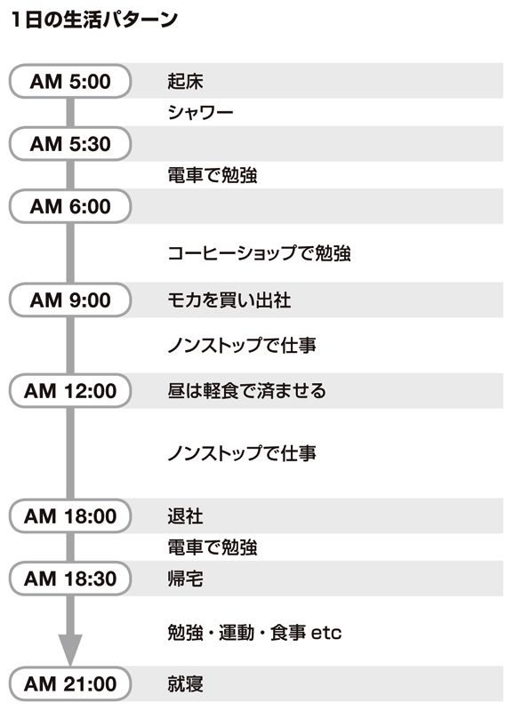

| 大人の勉強のやってはいけない！ | |
| 佐藤 孝幸 | |
| クロスメディア・パブリッシング(インプレス) (2012) | |
この本は縦書きでレイアウトされています。
また、ご覧になる機種により、表示の差が認められることがあります。
はじめに
戦略がなければ、永遠に結果は出ない
本書は、「大人（社会人）のための勉強」がテーマです。
では、学生のための勉強と社会人のための勉強の一番の違いはなんでしょう。
それは、勉強に費やすことのできる時間ではないでしょうか。
限られた時間での勉強に求められるのは、「一生懸命マジメにやる」ことではありません。
もちろん姿勢としては大事なのですが、何よりも必要なのは、目標を持ち、戦略を立て、どう効率的に時間を使うかです。
つまり、ムダなことをしないように合理的に取り組むことです。
たとえば、世界には教材を販売して儲ける通信教育の会社がごまんとあります。彼らは、教材を売るのが仕事です。
ですから、テレビコマーシャルや電車内の広告、新聞の折り込みチラシなどで教材を宣伝し、たくさんの人に受講してもらおうとします。
そのときに、「何かしておかなければ」という漠然とした不安や危機感、「これさえやっておけば安泰かもしれない」という期待、「他の人間とは違う自分になりたい」という自己顕示欲、そういうものだけに突き動かされてしまうと、確実に彼らのいいお客さんになってしまいます。
甘い誘い文句にまんまとはまり、続きもしない教材に数万円を払う。
そのようにして、いつまで経っても結果の出ない、なぜやっているかわからないような勉強を続けたりしてしまうのです。
司法試験を突破しても、食えない弁護士がいる
私は現在、弁護士という仕事をしています。弁護士というのは世間一般的に見れば、専門性が高く、従事する人も限られた特殊な仕事です。
「収入も多いし、将来は安泰だろう」と思われる人も多いと思います。
しかし、数年前から、弁護士資格を有しているにもかかわらず就職できない「弁護士ニート」と呼ばれる人が増えていることをご存知でしょうか。
数年かけて司法試験に合格したにもかかわらず就職できず、職にあぶれている人が年間数百人単位で出ているのです。
どんなに難しい試験にパスしたとしても、食べていけなければ意味がありません。
もっとも救いがたいのは、司法試験に合格するために何年も同じ勉強を続け、やっと合格したにもかかわらず就職できずにフリーター生活をしなければならない人たちです。
司法制度改革による司法試験合格者の増加により、企業や法律事務所ではより優秀な人材を確保しようとします。
当然、何度も試験に落ちているような人を採用するはずがありません。
現在、司法試験の勉強をしている人のなかには、弁護士が就職難であることを知っている人たちも多くいますが、司法試験合格を目標に何年も勉強を続けてきたので今更やめるわけにはいかないという人もいると思います。
悪いのは頭ではなく、やり方である
本書では、社会人が限られた時間の中で勉強をする上で「これはやってはいけない」という勉強に対するムダを各項目ごとに解説していきます。
大きく２つのパートに分け、前半が「心構え ＝ ＭＩＮＤ」、後半を「実際の行動 ＝ ＡＣＴＩＯＮ」とし、全12章、１０８項目です。
前半では、「目標の立て方編」「戦略編」「時間管理編」「語学勉強編」「資格勉強編」「教養編」の６章。
後半では、「生活習慣編」「時間術編」「記憶編」「テキスト編」「ノート編」「試験編」の６章。
最初から通して読んでも、好きなところから読んで頂くのでも構いません。
私はこれまで、米国公認会計士、司法試験などいくつかの資格を取得してきましたが、思うのは、勉強ができないのは「頭が悪いから」ではないということです。
勉強しているのに結果が出ないのは、頭が悪いのではなく、やり方が完全に間違っているのです。
ではどこが間違っているのか？ 本書のチェックリストがその手立てとなれば幸いです。どうぞ、最後までお付き合いいただけると幸いです。
目標の立て方編
□００１ そもそも、目標がない
□００２ 目標が目標になっていない
□００３ 続けることを目標にする
□００４ 期限を決めていない
□００５ 期限が長い
□００６ 本当はやる気がない
□００７ 逃げ道をつくっている
□００８ 複数の目標を同時に抱え込む
□００９ 目標を語る自分に満足する
戦略編
□０１０ 趣味と実学の線引きがない
□０１１ 損して得取れない
□０１２ 出口を見ない
□０１３ お金をケチる
□０１４ お金を使いすぎる
□０１５ 優先順位の決め方が感覚的
□０１６ 移り気
□０１７ 右へ倣う
□０１８ ランキング依存症
□０１９ 見栄を張る
時間管理編
□０２０ 細かいスケジュールを立てる
□０２１ 時間の優先順位が低い
□０２２ 今日できることを明日やる
□０２３ 勉強できない理由をつくる
□０２４ 残業癖がある
□０２５ 遅寝早起き
□０２６ 逆算しない
□０２７ 徹底できない
□０２８ 「勉強時間」に満足する
語学勉強編
□０２９ 勉強しているが、使う予定はない
□０３０ 動機が「コンプレックス」
□０３１ 使いこなせるまで封印する
□０３２ 語学学校に通う
□０３３ 訛りを覚える
□０３４ 辞書を使わない
□０３５ ＴＯＥIＣバカ
□０３６ 外国語バカ
□０３７ 日本のことを知らない
□０３８ 手段と方法を（都合のいいように）選ぶ
資格勉強編
□０３９ 食えない資格を取る
□０４０ 民間系資格を取る
□０４１ 「流行」と「権威」に弱い
□０４２ 趣味 ＝ 資格取得
□０４３ 読んでおいた方がいい本はありますか？
□０４４ 情報収集という名のネット張り込み
□０４５ 自分のレベルを把握しない
□０４６ 過去問を解かない
□０４７ 正解か不正解かに囚われる
□０４８ 天狗になる
教養編
□０４９ 実学を追い求める
□０５０ 書店に行かない
□０５１ 本を読むために本を読む
□０５２ 古典を読まない
□０５３ 読まない雑誌・新聞を購読している
□０５４ 整理しながら読まない
□０５５ ノウハウバカ
□０５６ 情報オタク
□０５７ 動機が「承認欲求」
生活習慣編
□０５８ ツイッター中毒
□０５９ 二次会に行かないと飲んだ気がしない
□０６０ 情報交換という名の飲み会
□０６１ メガネの度が合っていない
□０６２ 言い訳癖がある
□０６３ ストレス発散
□０６４ 家に帰ったらPＣをオン
□０６５ 「限定品」に弱い
□０６６ 勉強する場所を決める
□０６７ 朝食を食べない
□０６８ 反省しない
時間術編
□０６９ 手持ち無沙汰になるとケータイチェック
□０７０ 食べるものをサッと決められない
□０７１ スマホのアプリに凝る
□０７２ ネットで時間をつぶす
□０７３ 人脈づくりに励む
□０７４ 夜型
□０７５ 二度寝する
□０７６ いつもちょっとだけ遅刻する
□０７７ 便利なものが好き
記憶編
□０７８ すべて覚えないと気が済まない
□０７９ 全体像を理解しない
□０８０ 因果関係を考えない
□０８１ 書いて覚える
□０８２ 必要性の低いことに時間をかける
□０８３ メモ魔
□０８４ 手帳魔王
□０８５ 文房具魔神
テキスト編
□０８６ 教材のリサーチに時間をかける
□０８７ 買った１冊をやり抜く
□０８８ 買ったことで満足する
□０８９ ハイレベルに挑戦する
□０９０ テキストを汚さない
□０９１ 問題集を破らない
□０９２ 暗記を始める
□０９３ マーカーだらけ
□０９４ 勉強した内容を説明できない
ノート編
試験編
目標の立て方編
そもそも、目標がない
→ 目標を立てるべし
□ 何のために勉強するのか？
□ そのために必要な勉強は何か？
□ 正しい勉強をしているのか？
私は現在、弁護士として働いています。元から弁護士になりたかったわけではありません。大学を卒業して最初の勤め先は、とある外資系の企業です。働く中で資格の必要性を感じた私は、米国公認会計士という資格を取り、さらにアメリカに渡ったあとで日本の司法試験を受けることを決心したのです。
なぜ資格を取ろうと思ったのかというと、簡単に言えば「欲」と「危機感」でした。私が就職したのと同時にバブルが崩壊し、勤め先で先輩たちの首がバンバン切られていったのです。その光景にショックを覚えた私は、食べるのに困らない職業に就くために、勉強して知識やスキルを身につけなければならないと感じました。
これが、私が勉強を始めたきっかけです。
今もまた不安定な世の中ですから、「得体の知れない不安感」や「将来の保険」という意味で勉強をしている人、これから始めようという人が多いと思います。
しかし、資格にしろ、語学にしろ、教養にしろ、勉強をするに際して必ず決めるべきことがあります。それが、目標です。
勉強をして、何がしたいのか。そのために何を身につけたいのか。どう活かしたいのか。ここを決めずに勉強を始めるのは、ナンセンスです。時間のムダです。
あなたは、何のために勉強をするのでしょうか？
目標が目標になっていない
目標を立てるといっても、立て方次第でそのあとの結果は大きく変わってきます。
場合によっては「これなら勉強なんかしなければよかった」ということもあるかもしれないのです。
たとえば、弁護士になろうとロースクールに通う人は多くいます。現在、弁護士は増える一方です。人口減少傾向の日本で、弁護士が行う仕事がこれまで以上に増えるということは考えにくいです。しかし、司法試験合格者は増え続ける一方で、既に需要と供給のバランスが崩れてきているのです。実際、弁護士になったのに法律事務所に就職することができない「弁護士ニート」や、固定給なしで事務所の机（軒先）だけを借りる独立採算型の「ノキ弁」と呼ばれる人がたくさんいます。
「弁護士になる」ことを目標として何年も他の選択肢を閉ざしてまで勉強をしてきたのに、収入が一般の会社員よりも低い。そんな人も少なくないのです。
「弁護士になる」は、手段であり、目的ではありません。
あなたの目標に戦略はあるでしょうか？
続けることを目標にする
継続は力なり、と言います。実際、私もそう思います。
しかし、ここには大きな罠があります。
勉強は定期的に続けていくことが大切なのはもちろんですが、続けることが絶対に必要なわけではありません。問題は、成果だからです。
たとえば、健康のために毎朝30分ランニングしよう、というのならいいでしょう。
しかし、「英語を1日30分勉強しよう」では、いけません。
なぜ勉強するのか？ それは、勉強して達成したい目標があるからです。
本来掲げる目標としては、「交渉事ができるようになるまで英語のレベルを上げる」などが適当でしょう。
勉強に関しては、どれだけ続けているかは関係ありません。効果や効率を考えるのであれば、勉強にかける時間は少なければ少ないほどいいのです。
勉強しているうちに「続けることが大切」と、意識が変わっていないでしょうか？
そうしたすり替えは時間をムダにしてしまいます。
期限を決めていない
→ 期限を決めて、逆算するべし
□ 目標に期限はあるか？
□ アバウトに行動していないか？
□ 逆算できているか？
目標には、具体性が必要だと言いました。しかし、もう一つ欠いてはいけない視点があります。それは、「期限」です。
人の生活は、常に時間に左右されています。
始業は９時から、終業は18時。０時に就寝、７時に起床、８時に家を出るなど、あらゆる生活の尺度となるのが時間です。
「何時までに何をしないといけない」という期限があるからこそ、私たちは行動をします。つまり、逆算できるのです。
人間の意志は弱いものです。「いつまでに」が決まっていないと、どこまでも先延ばしにしたり、サボったりし、結局何もしないままということになりかねません。
特に勉強というのは、ほとんどの場合、強制力がありません。そこで、時間によって自分を追いつめるのです。
たとえば寝坊をして「あと５分で家を出ないと終わりだ」というとき、普段よりも数段早い動作で支度を終えるということがあるかと思います。それは、「できなければ終わりだ」という危機感があるからです。
同様に、期限は危機感を煽り、結果として効率に結びついてきます。
目標と期限は、常にセットで考えるようにしてください。
期限が長い
→ 目標は、最長２年と考えるべし
□ 期限の長さは適当か？
□ 長すぎないか？
□ 決めた期限を破っていないか？
目標には期限を決めることが必要です。
しかし、期限を決めるにしてもやり方があります。私の場合、資格を取るときには「必ず２年以内に取る」と決めています。もちろん、資格によってバラつきはありますが、最長２年です。達成できなければ、そこでスッパリとあきらめます。
残酷なようですが、人間にはどうしても向き不向きがあります。
特に資格試験の場合、合格がゴールではありません。試験合格は「その道に入ることが許された」というビギナーの証であり、そこからがスタートです。
たとえば、15年間かけて公認会計士になったという人と、１年でなったという人、どちらと一緒に仕事をしたいでしょうか？ 私なら、後者を選びます。
自分の適性に合わないことで結果を出そうとすると、やはり時間がかかります。コストも増えます。そして、積み上がったコストの回収にも時間がかかります。
その意味で、「２年以内」という短い期限はリスクヘッジにもなるのです。
また、期限を短く設定するのにはもう一つ理由があります。それは、集中して短期決戦できるということです。人は、期間が長ければ長いほど、モチベーションを保つのが難しくなってきます。
だからこそ短期間に全力を注ぎ、最小限のコストで成果を出すようにするのです。
本当はやる気がない
→ やる気がないなら、やらなくてよし
□ やる気は本物か？
□ 小手先のテクニックを求めていないか？
□ 王道から逃げていないか？
「勉強するとき、どうやってやる気を出しているのですか？」と聞かれることがあります。私は「やる気を出す方法などありません」と答えます。基本的に、やる気や集中力を出す方法などは、ないと考えた方がいいと思います。
「勉強が終わったら何々ができる」というようにご褒美を用意するといいという話もありますが、意志が強くなければ結局続かないでしょう。
私の経験上、勉強に対するモチベーションとは「欲」と「危機感」からしか生まれません。「実現したい」という欲望と、「実現しないとまずい」という危機感、このどちらか、あるいは両方がなければモチベーションを維持するのは難しいと思います。
私は米国公認会計士と司法試験の他、いくつか関連した資格を持っていますが、なぜ資格を取得したかというと、いずれも仕事で必要だったからです。あるいは、持っておけば仕事で有利になると思ったからです。つまり、欲です。
最初に取得した米国公認会計士の資格に関しては、バブル崩壊が引き金でした。自分には武器が必要だという欲と危機感がそうさせました。
やる気が起きないというのであれば、無理にやらないでいいでしょう。「そういうわけにはいかない」というのであれば、今すぐ始めてください。
あなたの勉強には、欲と危機感があるでしょうか？
逃げ道をつくっている
→ 逃げずに、正々堂々と勝負するべし
□ やらない理由を探していないか？
□ 負けたときのことを考えていないか？
□ 自分のための勉強ができているか？
働きながらの勉強を成功させようと思ったら、鍵になるのは時間の使い方です。
学生とは違い、勤め人は最低でも1日８時間は仕事をしなければなりませんから、睡眠時間や食事など、諸々の時間を差し引いた上で勉強のための時間を捻出しなければなりません。
そうなると、聞こえてくるのはこんな声です。
「勉強を始めようと思うのだけれど、なかなか時間がない」「残業が多くてまとまった時間が取れない」「付き合いが多い」。
試験などに失敗したときは、「今回は全然時間がなくてダメでした」「体調を崩して追い込みができませんでした」。
本当に勉強を成功させようと思うのであれば、このような逃げ道は一切断つことです。
あなたは、誰のために勉強するのでしょうか？
他でもない、自分自身のためではないでしょうか。時間がないのなら、集中して仕事をこなし残業を減らすための努力をすればいい。疲れているのなら、マッサージに行くなり、いい枕を買うなりして、疲れを取ればいい。
できることはいくらでもあるはずです。
複数の目標を同時に抱え込む
→ 二兎を追うものは一兎をも得ず
□ 目標を一つに絞れているか？
□ 中途半端になっていないか？
□ 強欲になっていないか？
投資の手法の中に、「分散投資」というものがあります。
たとえば１００万円を投資するとき、Ａ社とＢ社に30万円ずつ、Ｃ社とＤ社に20万円ずつ、というように投資先をいくつかに分けてリスクを分散することで大損のリスクを減らすという考え方です。
しかし、勉強に関してはあてはまりません。必要なのは、短期間で一点集中の勉強です。
英語も中国語も勉強したい、会計の知識も経済学もわかるようになりたい、とあちこちに手を出していると、十中八九結果を出せません。日本人で初めてノーベル賞を受賞した湯川秀樹先生も「今日はあれをやり、明日はこれ、というように、あまり気が散ると、結局どれもものにならないですね」という言葉を残しています。
複数の目標をかかげ、あちこちに手を出していると、ずるずると時間がかかり、何もかも中途半端になるのです。
時間は有限です。
一つ、また一つと目標を達成していくことが、遠回りのようで一番の近道です。
欲を抱くことは必要ですが、何でも欲しがってはいけません。
あなたの勉強は、強欲になっていないでしょうか？
目標を語る自分に満足する
「目標は公言しなさい。すると、やらざるを得なくなるから」という考え方があります。人は欲の生き物ですから、他人からどう思われているのか気になります。人に公言した手前、「ダメでした」と恥をかきたくはない、だから必死で勉強するようになる。そういう意味では私も賛成です。
しかし、ここで危険なのは、「何々をしたい」と語る自分に満足してしまうことがあるということです。
勉強の相談に乗っていると、目標を語っている自分に酔っている人に会うことがあります。資格を取って、将来こんなことをしたいと嬉しそうに語ってくれるのですが、「そのためにどんな勉強をしているの？」と聞くと、「何を勉強したらいいかわからないから相談に来ました」と、ため息の出るような相談を受けたことがあります。
夢や希望を抱くことを否定はしません。しかし、地に足のついていない目標は、目標ではありません。やはり、ただの夢や希望で終わってしまいます。
口と行動が伴っているでしょうか？
戦略編
趣味と実学の線引きがない
→ 趣味と実学を分けずして戦略なし
□ その勉強は実用性があるか？
□ その勉強は収入に結びつくか？
□ 結果を意識しているか？
一口に「勉強」といっても、大きく２種類に分けられます。
それは「教養」と「実学」です。
私は昔から座学が好きで、ゆくゆくは大学の先生になろうと思っていたくらいです。最近では数学の勉強も趣味でやっています。ですが、仕事に直接役立つわけではなく、あくまでも「教養」です。このような教養を身につけたいという場合、ここまで説明してきたような目標や期限というのは特に設ける必要はないでしょう。いくらでも好きな時間を使って気の済むまで極めればいいと思います。
しかし、実学の場合は別です。実学というと幅が広いですが、資格試験や語学勉強というのは多くの場合こちらの部類に入ります。仕事や人生に直接関係してくるものの場合、とにかく目標を決めて短期で達成しないとムダがどんどん増えていきます。
勉強において大切なのは、この趣味と実学に明確な線引きをしておくことです。
たとえば語学にしても、「英語の本を読めるようになりたい」「旅行のために英語を勉強する」というのは、趣味の領域です。「転職のためにＭＢＡを取りたい。そのための英語を身につけたい」というのであれば、これは実学でしょう。
この２つを分けて勉強し、実学の場合には、戦略を立てるということ。これが必要になってきます。
損して得取れない
→ 未来の利益に目を向けるべし
□ 損切りができるか？
□ 目先の利益に踊らされていないか？
□ 想像力は働いているか？
戦略を考える上でやらないといけないことは、優先順位を決めるということです。
では、どのようにして優先順位を決めるのでしょうか？
それは、行動指針を決めておく、ということです。一定のルールを設けることだと考えてもいいかもしれません。私にとっての行動指針は、「損切り」です。
「損切り」というのは株式投資の考え方ですが、投資先の会社の株価が買った値段より下がってしまったとき、たとえ損することになっても、「この額以下になったら売ってしまう」とあらかじめ決めておくことです。
売らずに待っていればもしかしたら回復するかもしれない......という期待を持っていると、どんどん損が大きくなり、回収できなくなるくらいふくらむ可能性があるからです。
そのため、仕事を受けるときも「この案件は手に負えないな」と思う場合にはお断りすることもあります。
報酬はもらえるのですが、請け負うと確実に面倒なことになりそうだという案件は、丁重にお断りをします。この先自分が使うことになる労力を考えると、その方が自分のためになると思うからです。
損切り。そんな行動指針があると、物事の優先順位は格段と決めやすくなります。
出口を見ない
→ 全体像を把握するべし
□ 自分の到達すべきゴールはどこか？
□ 自分は今どこにいるのか？
□ ゴールに向かうために何をすべきか？
勉強では、目の前のことを一つひとつこなしていくことが必要ですが、同時に、自分が今どれくらいのレベルなのか、全体を俯瞰することも必要です。
そのためには、自分が最終的にたどり着かないとならないレベルを把握しておかないといけません。つまり、勉強の出口を確認しておくのです。
たとえば、あなたが「早稲田大学の文学部に入りたい」と思ったとします。
そのとき、まず確認しておかないといけないのは、「どれくらいのレベルの問題が解ければ合格できるのか？」「どれくらいの点数を出せれば合格できるのか？」という２点です。ごく簡単に言うと、これが出口を確認するということです。
最終的にたどり着くべきラインがわかれば、そこから逆算することができます。
「自分に足りないことは何か？」「どの分野をどれくらい勉強すれば到達できるだろうか？」「１日どれだけ時間を割けるだろうか？」などと、戦略を立てることが可能になるでしょう。
これは例えるなら迷路のようなもので、最終的な出口を俯瞰して見ることができると難なくクリアできることも、やみくもに解こうとするから迷い、しなくてもいいはずの寄り道を重ねてしまうのです。
出口の確認をしているでしょうか？
お金をケチる
どんなことでも、物事を行うときには、必ずコストが発生します。
コストとは、時間とお金の２種類です。このコストには、「かけてもよいコスト」と「かけてはいけないコスト」があるのですが、前者の「時間」に関しては「かけてはいけないコスト」。徹底的にケチるべきだというのが私の考え方です。
対して「お金」というのは「かけてもよいコスト」。ケチらずにどんどん使うべきです。なぜなら、あとで大きな金額になって還ってくることがあるからです。
勉強というのは、とどのつまりは情報です。
特に、自分が今どんなレベルに立っているのかわからない、何をすればいいのかわからない、という最初の段階では積極的に情報を買うようにした方がいいでしょう。
本を買う、セミナーに通う、予備校に行く、何でもいいと思います。何となくでもいいので、「こういうことをしたらできるようになるのか」と早い段階で把握しておくことが大切です。「もったいない」などと思わず、お金を使いましょう。そこに使ったお金は、あとでいくらでも回収できるはずです。
お金を使いすぎる
だからといって、見境なくお金を使ってしまうというのも考えものです。
最初に「投資」としてお金を使うことはいいですが、いつまでも同じように使い続けていると、それは完全な「ムダ」となります。
ある程度全体像やレベルを把握したら、あとは自分の頭で物事を判断するようにしないといけません。勉強は、最終的にはすべて自分の意志で行っていくものです。
そもそも、お金を使うというのは、お金を使えば勉強ができるようになるからではありません。勉強ができるようになるために、お金を使うのです。
しかし、お金には魔力があります。また、人間は自分の意思で勝手に事実を曲げることがあります。
そのため、「これなら効果があるに違いない」「もう少し続ければ効果が出てくるだろう」などと、ありもしない幻想を抱くようになってしまうのです。
身の丈に合ったお金の使い方をするというのは言わずもがな、リターンを意識し、むやみにお金を使い続けるのは絶対に避けましょう。
優先順位の決め方が感覚的
→ 明確な基準を設けるべし
□ 何となく始めていないか？
□ 何となく続けていないか？
□ 何となく時間を使っていないか？
勉強の戦略を立てる上で、優先順位をつけることが重要だというお話をしました。
私の場合、仕事や勉強をこなしていく中で優先順位の一番上に置くのは「納期」です。納期とは、その仕事が必要とされる期限を意味しています。
たとえば、明日までにやるべき仕事と明後日までにやらないといけない仕事があった場合、必ず前者の仕事から片づけるのです。
そして、明日までの仕事が終わった、もしくは目途が立ったところで明後日までの仕事に入り、それが終われば次に納期の近い仕事......と続けていくのです。
こうすると、時間の使い方にムラがなくなります。ちょっと時間が空いても手持ち無沙汰になることがないのです。
一方、こうしたはっきりとした指針をつくらず、何となくの感覚で何をするか決めているようでは、効率は悪くなるばかりです。
勉強でいえば、とりあえず最初から最後まで教科書を読んでみるというのではいけないということです。自分に足りないところを強化するのか、自分の得意分野を伸ばすのかはそれぞれですが、どんな優先順位で片づけていくかを、勉強を始める前に考えておくようにしてください。
そして、それを粛々と片づけていきます。
移り気
→ よそ見をするべからず
□ 気分に左右されていないか？
□ 言っていることが昨日と違っていないか？
□ 言っていることとやっていることが違わないか？
もう一つ、優先順位の話をしましょう。
優先順位を決める上でのもう一つのタブーは、気分や好き嫌いに頼ることです。
仮にあらかじめ優先順位を決めていたとしても、その時々のコンディションでぶれるというのでは意味がありません。
今日は気分がいいから苦手なところを、今日は気乗りしないから得意なところだけを......これは、最悪なパターンです。
総じて、時間の使い方が悪い人というのは、あちらこちらに移り気になり、最初に決めたことを徹底できていないのだと思います。
そうして嫌なことを後回し後回しにしていった結果、やるべきことがどんどんと溜まっていき、重たい気分を引きずり続けるという負の連鎖にはまってしまうのです。
子どもであれば、「夏休みの宿題は最後の日にやる」というのは笑い話で済みますが、大人が「本日のプレゼン資料は昨日徹夜でつくりました」というのでは、そのクオリティー次第では笑って済まされないこともあるでしょう。
行動基準が一貫している人というのは、周囲の人からすると信頼できる人という評価にもつながってきます。
優先順位に従い、徹底する意志の強さを持ってください。
右へ倣う
私はこれまで、資格試験を受ける場合にはほとんど独学で勉強を行ってきたのですが、最初に取得した米国公認会計士のときは予備校に通ってみました。何をどう勉強すればいいのかまったくわからなかったからです。しかし、結局３ヶ月で辞めてしまいました。
理由は、先生による講義、生徒同士の情報交換......結局どれも表面的な情報ばかりで、本質的なことは一つも出てこないだろうと思ったからです。ここでの本質的なこととは、私が本当に米国公認会計士に受かるための情報です。
もちろん、読むべきテキストと過去問の集め方がわかったという大きな収穫がありましたが、今はインターネットもあります。それくらいの情報なら10分もあれば集められるのではないでしょうか。
何が言いたいかというと、世の中でいいと言われているものが、自分にとっていいものとは限らないということです。資格試験なら、予備校。就職なら、大企業。というように、「右へ倣え」の短絡的な考え方をしていると、本質を見失っていきます。
ランキング依存症
前項の続きとなりますが、情報が増えてくると、どうしても人間は権威や絶対多数に心が動かされやすくなります。わかりやすく言うと、「ランキング」や「人気」、「評判」といったものに弱くなるということです。
自分で決断しないというのはとても楽なことです。そして、楽なことは癖になります。結果として、権威や多数派に流されていく習慣がついてしまうのです。
ランキングがまったく役に立たないかといえば、そんなことはないでしょう。私も先日、初めてスマートフォンを買ったのですが、そのときは店員さんに「売れている順番に３つ教えてください」と尋ねました。その中で、一番安い機種を買いました。でもそれは、「自分にとって比較的どうでもいいこと」だったからです。
勉強に関して言えば、ランキングなどまず当てになりません。人それぞれ能力が異なりますし、必要な勉強量も方法も違ってくるからです。
あなたに必要なことは何でしょうか？
それを最終的に決めるのは自分だということを忘れてはいけません。
見栄を張る
私の好きな言葉に、「無知の知」という言葉があります。
これはソクラテスの言葉で、知ったかぶりをしている人よりも、自分が無知であると認識できている人の方が優れているというものです。
私のような弁護士や会計士など、いわゆる「士業」と呼ばれる業界には高学歴な人が多く見られます。そのためか、プライドの高い人たちがたくさん存在しているのです。では、プライドが高いとどうなのかというと、見栄を張り出すのです。
自分が賢いことを誇示してみたり、ブランド時計、高級車を買い、高級マンションに住む。このような人を揶揄したいわけではありません。言いたいのは、見栄を張り出すと余計なコストがかかるということです。お金もそうですし、時間もそうです。
そして、間違いなく言えるのは、勉強に見栄はまったく必要ないということです。
勉強会のような場所に出てああでもないこうでもないと知識を披露し合う必要はありませんし、分厚い本や難しい本を読めることが正しいわけではありません。
そこを見誤ると、変な方向に進んでしまうのです。
時間管理編
細かいスケジュールを立てる
→ コントロールできない予定では意味がない
□ 理想的なスケジュールを立てていないか？
□ できないことを前提に立てていないか？
□ できなくてもいいと思っていないか？
勉強をするときにはスケジュールは細かく設定することもあるかと思いますが、私の場合、細かなスケジュールを立てたことはありません。
細かなスケジュールとは、たとえば１ヶ月の予定を立てるなら、「この週は何をして、何を覚えて、達成度はどれくらいで」など時間を細かく区切って具体的なスケジュールを組み込むことです。
このような細かなスケジュールを立てても、ほとんどの場合、完璧に進むことはありえません。
特に社会人の場合は、突発的な仕事が出てきたり、予期せぬトラブルに巻き込まれたりと、予想外の出来事がつきものです。
だから、私がスケジュールを立てる上で考えるのは、「今日は何をしようか」「明日は何ができるだろうか」ということだけです。今日明日くらいの予定であれば自分の裁量でコントロールも可能ですが、それが１週間、１ヶ月先となるとなかなか思い通りにはいきません。
スケジュールは、綿密に立てれば立てるほど狂いやすくなります。計画通り実施できないのであれば、そもそも予定を立てる意味はありません。
無理なスケジュールを立てて自分を追い込んでいないでしょうか？
時間の優先順位が低い
→ 時間の価値は、重い
□ 時間を大事にしているか？
□ かけた時間に対するコスト意識はあるか？
□ かけた時間に対する成果を意識しているか？
時間を大切にする。簡単なようですが、これができているかどうかが勉強で（特に仕事と両立しながらの勉強で）結果を出せるかどうかの大きな分かれ目です。実際のところ、どれだけ徹底できているでしょうか？
私が時間のことを強烈に意識し始めたのは、米国公認会計士の資格を取ったあとアメリカの公認会計士事務所で働いていたときでした。
以前は外資系の企業で働いていたということもあり、ついていけないことはないと考えていたのですが、現場の仕事スピードに圧倒されました。彼らの仕事は驚くほど早く、その上、正確でした。
アメリカでは、仕事が遅い人には仕事自体が回ってきません。最低限のペースについてこれなければ即クビ。生活がかかっていましたから、必死になりました。
時間は、誰にでも平等に与えられています。
誰かが電車で寝ていた10分と、誰かが数億円の商談をまとめた10分は同じ10分です。同じ10分でも、使い方次第で「時間の価値」が変わります。
時間の価値を高めるためには、時間の優先順位を上げることが必要です。ボヤボヤしていればすぐに過ぎ去ってしまう。だからこそ、大事にできている人とできていない人との間に大きな差が生まれるのです。
今日できることを明日やる
→ 後回しにする者はバカを見る
□ ５分でできることをためらっていないか？
□ 気の重いことをあとに残していないか？
□ 本当に、今日できないことなのか？
「明日やろうはバカやろう」。ある大学教授が仰っていた言葉です。
言い古されたことではありますが、その日のうちにできることをその日のうちにやらないことが時間をムダに使ってしまう要因となります。
私は細かいスケジュールを立てないと言いましたが、一方で徹底しているのが「コントロールできる時間の中では、やるべきことをすべてやる」ということです。
すでに話題にしたように、仕事には、すべて期限が決まっているはずです。
何日の商談までに用意しておくべき資料、何日までに上司に出さないといけない提案書、何時までにかけないといけない電話など、日常の業務に加えて、突発的に発生する仕事の積み重ねで仕事は進んでいきます。
私が今日やるべきことを今日やるのは、後者の突発的な仕事に対して柔軟に対応できるようにするためです。〆切が近々の仕事を一つ終えたからといって一休みするのではなく、その次にやっておくべき仕事に手をつけておくことで、仮に翌日に予定外の仕事が入っても定時で上がれるようにしておくのです。
「明日やろうはバカやろう」。明日に今日すべきことを残さないことが、結果的に自分を楽にするのです。
勉強できない理由をつくる
「今日は何があるから」「明日は何があるから」「今は何を抱えているから」。
本当に勉強をしたいというのであれば、こうした「勉強できない理由」をつくらないことです。
勉強できない理由というのは、紐解いてみればそもそもの考え方や取り組み方に問題があることがほとんどです。
たとえば、「勉強してキャリアアップをしたいけれど、拘束時間がきつくて時間をまったく確保できない」という人。この場合、本当に長時間働かなければならないのか？ なぜ長時間働いているのか？ その中で勉強に使える時間はないのか？ など、根本の時間の使い方を考えてみるべきですし、それでも絶対無理というのであれば、極端な話、仕事を辞めてしまえばいいと思います。半年間、失業保険をもらいながら本気で勉強をしてみるというやり方だってあるはずです。
現状を変える気概も意志もないのでは、いくら時間があろうとなかろうと、関係がないように思います。
残業癖がある
会社の規模や所属する業界によって残業に対する考え方は違うので一概に言うことはできませんが、残業が恒常化しているのであれば、そこには必ず理由があります。
日中の効率の悪さからくる「居残り残業」、本当はする必要のない「付き合い残業」、残業しないと評価されないので仕方なくする「見せかけ残業」など。
たまにならいいでしょうが、癖として習慣化しているようであれば、右記のような何らかの問題があるのだと思います。
仕事量が多いからなのか、やり方が悪いからなのか、会社の体質的な問題なのか、自分のスタンスや振る舞いのせいなのか、考えるようにしましょう。
仕事量が多いのであれば上司に相談してみるべきですし、やり方次第で克服できそうなのであれば、時間に対する意識をもっと持ってください。「仕事は特にないものの、会社の空気で自分だけ早く上がるわけにはいかない」というのなら、まずは週に１度でも２度でも早く帰る日をつくればいいと思います。
やりようは、必ずあります。
遅寝早起き
→ しっかり寝るべし
□ 睡眠時間は足りているか？
□ 昼のパフォーマンスはいいか？
□ 本当に夜しか時間がないのか？
一般的な会社員が勉強をするためには、休日を利用するか、平日の出社前と帰社したあとを使ってまとまった時間を取ると思います。
中には遅くまで勉強をしたり、朝早くから勉強したりする人もいるようですが、私の場合、勉強をしているときも勉強をしていないときも変わらず、10時就寝が基本です。そして朝は５時半から６時半くらいまで寝るようにしています。
なぜそうするかというと、残業なしで仕事を終わらせ、勉強の吸収効率も高めたいからです。睡眠は７～８時間しっかりと取り、スッキリとした頭で仕事と勉強に向かう。これが効率を高める一番の方法だと思うのです。
もちろん体質の問題もあるでしょう。しかし、勉強に割ける時間がないからと短い睡眠時間で生活をしていると、どこかで無理が生じてきます。１～２ヶ月ほどの短期間なら何とかなるかもしれませんが、１年くらいのスパンになると必ずどこかで挫折します。朝は動かない体にムチを打ち、昼間はウトウトと眠い目をこすりながら仕事をし、夜も何を勉強しているのかだんだんわからなくなり、休日は寝てつぶす。それでは、逆効果もいいところです。
結局、仕事のパフォーマンスを最大まで高めることが、勉強にもつながります。必要なのは、遅寝早起きの根性ではなく、早寝早起きの環境づくりなのです。
逆算しない
→ 逆算して、時間を区切る
□ 業務を逆算しているか？
□ 一つの作業に割り当てる時間を決めているか？
□ その時間は〝なぁなぁ〟になっていないか？
私が思うに、仕事を効率的にこなすために必要なことは、「ここまでに終わらせる」と決めた仕事を必ずそれまでに終わらせるということです。一つひとつの仕事にかける時間を明確に区切るのです。
これは、勉強に対する目標の立て方と同じです。つまり、仕事の全体像を把握して、最終的なゴールを見極め、そこから逆算する。
時間をつくるのが下手な人というのは、この一連の作業ができていません。
何時までに終わらせようという意識もなく漫然と仕事をしていればダラダラと時間を使ってしまうのは当然ですし、「何時までに終わらせよう」という意識があっても、仕事の全体像を把握していなければ予定通りには進みません。
メールの返信一つとっても、「10通返信するから、1通２分、20分以内に返そう」と考えるのか、「10通あるから30分くらいかかるかな」と漠然と考えるのとではそれだけで効率が変わってきます。
有用な時間の使い方をするためには、仕事のやり方もそうですが、何より頭の使い方を変えていかないとなりません。
日々の業務を逆算できているでしょうか？
徹底できない
→ 決めたことは守り通すべし
□ ルールを決めているか？
□ そこに甘えはないか？
□ 例外をつくっていないか？
勉強で短期決戦を実現するためには、ある程度変えなくてはいけないことが出てくるでしょう。何もかも今まで通りのペースでやるというわけにはいきません。
代表的なところでは、「付き合い」があるでしょうか。
私は普段から飲み会に出ることはほぼないのですが、勉強期間に入ったら絶対に出ることはありません。行くとしたら、どうしても出席しないとならない会合くらいのものです（これも、顔を出しただけですぐに帰りますが）。
絶対に飲み会に出てはいけないということではありませんが、仮に出ないと決めたのであれば絶対に出ない。自分に甘えを許さないということが必要です。
それが一生続くのであれば話は違いますが「いつまでに何をするか」が明確に決まっている短期勝負なのですから、あきらめもつきます。どれだけ長くても２年です。
その２年でそのあとの人生が変わってくるのだとしたら、ストイックに徹底する意志の強さがなければなりません。
いずれにしろ、一定のルールを定め、ルール外のことはしない。人間関係に影響を与えそうなのであれば、了承を取れるように事前に根回しをしておくことです。
厳しいようですが、「ご褒美」とか「今日だけ」とか、例外を許すのもいけません。「ここまでに何をする」と決めたら、絶対にそうすることが必要なのです。
「勉強時間」に満足する
あなたが上司に頼まれた資料をつくったとします。その上司は、何を基準にあなたの仕事の善し悪しを評価するでしょうか？ そこまでにかけた時間でしょうか？ 日々の業務への取り組み姿勢でしょうか？
違います。見られるのは資料自体の完成度のはずです。大切なのは、プロセスではなく結果。あたりまえの話なのですが、しかし、これが勉強となると、危険なすり替えが起こってしまうことがあります。
それは、勉強を続けているうちに「勉強していること」自体に満足をしてしまい、今日は何時間したとか、してないとか、そこに目が向いてしまうことです。
「１万時間の法則」といって、あらゆる業界の一流と呼ばれる人は平均して１万時間を練習や勉強に費やしてきたという主張があります。しかし、１万時間は必要条件ではありません。英単語１個を覚えるのに、10秒かけるのと１時間かけるのでは、前者の方がいいに決まっています。1万時間かけることではなく、1万時間より少ない時間で結果を出せるよう尽力するのが、本当の勉強なのです。
語学勉強編
勉強しているが、使う予定はない
→ 目的なくして上達なし
□ 語学を勉強する理由があるか？
□ 理由が漠然としていないか？
□ まわりに流されていないか？
日本でも一時、有名企業が会社内で英語を公用語化するという話で盛り上がっていましたが、勉強というと英語や中国語といった語学を始める人が多いでしょう。
しかし、その中には、「何となく勉強したいけど他に思いつかないからとりあえず英語をやる」「使う予定はないけど、何かの役に立つだろうから勉強する」と、見切り発車の人が多いのも事実だと思います。
特に目的はないが、勉強している。それは、勉強ではありません。
たとえば趣味として、旅行ができる程度の英語が使えるように勉強しているというのであればいいでしょう。そのための教材を買えばいいと思います。
しかし、何のために、どの程度の英語力が必要なのか、自分の到達点が決まっていなければやりようがありません。到達点が定まっていなければ習得のスピードも落ちるので、その分時間やお金を犠牲にすることになるのです。
繰り返しますが、問題は、どの程度までレベルを高めたいのかということです。
今は子どもに英語を勉強させるケースも増えているようですが、「将来困らないように」という漠然とした理由で語学を学んでいる（学ばせている）人があまりにも多いと思います。
一体、何に語学を使うのでしょうか？
動機が「コンプレックス」
→ 語学を修めれば安泰というわけではない
□ 気持ちが先走っていないか？
□ 本当に、語学を修める以外の選択肢はないか？
□ 他の選択肢は検討したか？
日本人というのはどうも外国語に対してコンプレックスが強いようです。
そして、コンプレックスが強いゆえに憧れも強く、「英語ができれば安泰だ」「海外の大学を出れば安泰だ」「ＭＢＡを取れば安泰だ」などという短絡的な考えに結びついているように思います。
憧れやコンプレックスは、ときに強烈なモチベーションを上げる道具になるので、一概にダメだというわけではありませんが、気をつけなければなりません。
なぜならほとんどの場合、そこにはゴールがないからです。
「とにかく現状を抜け出したい」という強い思いがあっても、ではその先にどうするかという戦略がありません。欲求だけが先走り、頭が追いついていないのです。
社会に出る前の10代20代の人たちであればそれでもいいでしょう。時間はありますし、がむしゃらに動いたとしても、あとでやり直しはいくらでもききます。
ただ、働く大人がそれではどうなんだと私は思うのです。
たとえば勉強をキャリアにつなげるとしても、年齢を重ねればできることは限られてきます。学ぶことに終わりはありませんが、実際に仕事に活かすとなればおのずと限界が出てくるのです。そんな選択ミスをしないよう、気持ちだけで勉強しないようにせねばなりません。
使いこなせるまで封印する
→ 間違えれば、覚えは早い
□「使う」と「覚える」をはき違えていないか？
□ 完璧を目指していないか？
□ 恥を極度に恐れていないか？
かく言う私も、アメリカの公認会計士事務所で働いていたときには、実は英語には相当悩まされました。
当時の私の英語の学力は大学を卒業できる程度で、読み書きならまだ何とかなるかもしれないが、話すのは絶対無理、というレベルでした。
実際に働いてみて一番困ったのは、電話です。面と向かっての会話なら相手も気をきかせてゆっくりと話してくれるのですが、電話となるとお構いなしに本気のスピードでしゃべるのです。
これはたまらないと、あるときから私宛にかかってきた電話はすべてボイスメールという留守番電話のような機能に転送してあとで何度も聞き直すようにしました。
そうして思ったのは、外国語は使わなければうまくなるわけがないということです。中でも、「完璧に使いこなせるまで人前では披露しない」というのはよくないパターンです。人は失敗をして、自分の頭で工夫して考えて、実践していきながら覚えていくものです。
私がボイスメールを使うようになったのは「会議に来なければいけない」という電話を「来なくてもいいよ」と聞き間違えたことからでした。幸い大事に至りませんでしたが、そうした失敗が次からは気をつけようという危機管理能力につながります。
語学学校に通う
→ 半端な学習では、結果も半端である
□ 本当に、目指すレベルが見えているか？
□ 本当に、語学を身につける気があるか？
□ 本当に、そのやり方で成果が出るのか？
語学にもいろいろな勉強法がありますが、私が一番おすすめできないのは語学学校に通うことです。
語学勉強といえば語学学校というイメージができあがっているのか、勉強している気持ちになりやすいからなのか、受講を希望する人が絶えないそうですが、結局は時間とお金をムダにしてしまうのでは、というのが正直な感想です。
たとえば、1ヶ月後に海外への転勤が決まっているので、直前の準備のために、というのであれば話はわかります。
しかしそうでない場合、週１～２回、1日２時間程度といった少ない回数と時間ではよほど意識が高くない限り、ものにするのは難しいでしょう。
何より、「行かなければならない」という強制力も弱いので、一度行かなくなると確実に挫折してしまいます。
これは語学学校に限った話ではありませんが、中途半端にお金と時間を使うくらいであれば、入念に準備をして、２～３ヶ月留学した方がいいのではと思います。
現場で使える語学力を身につけるという意味では、使わざるを得ない状況に追い込むのが一番いい方法です。
訛りを覚える
→ 仕事で使うなら、標準語を
□ ビジネス用の言葉を学んでいるか？
□ 発音はクリアか？
□ 変な癖や言葉を覚えていないか？
私が英語を学んだ場所はサンフランシスコでしたが、今でもよかったと思っているのは、標準の英語を学べたということです。
標準の英語とは、アメリカならニューヨークや私のいたサンフランシスコ。中国語なら北京など、その国の主要都市で使われている言葉です。
特に仕事で外国語を使うという場合、変に訛った言葉を覚えてしまうと自分自身の信用力にも関わってきます。
私の英語はお世辞にもうまいとは言えませんでしたが、いい職場に恵まれたおかげで濁りのない発音には自信を持っていました。
中高生ならまだしも、大人が語学を修めようとするのであれば、地元の言葉やスラング（俗語）ではなく、どんな場面でも通用する言葉をきちんと覚えるということが大事だと思います。
ちなみに似たような話で、夏目漱石は英語を学びに行くため、ロンドンに行くか、スコットランドのエジンバラに行くか迷ったそうです。結局はロンドンへの留学を決めたのですが、その理由はエジンバラの英語の訛りが強かったからだと言います。エジンバラの訛りを東北地方のズーズー弁にたとえて、「せっかく英語を学びに来てズーズー弁を学ぶのはどうなんだ」と断念したのだそうです。
辞書を使わない
→ 語学の基本は語彙である
□ わからない言葉を放置していないか？
□ 辞書を引いているか？
□ 言葉のバリエーションを持っているか？
現在私は、枕代わりに英和辞書を敷いて寝ています。比喩ではなく、文字通り枕代わりにしています。
高さがちょうどいいというのと、寝っころがりながら仕事に関する文献を読んだり経済紙などの記事を読んだりするのが好きなので、その際わからない英単語に出会ったらすぐに辞書を引けるようにしているのです。
その言葉が何を意味するのかわからないまま読み進めるよりも、早く調べてしまった方があとで楽だからです。
面倒な仕事はあとに残さないようにするのと同じで、わからないことを後回しにしないようにする。それが語彙を増やすための秘訣です。
ところで、日本人が中国に行くと、中国語が話せなくともそこまで困ることは少ないといいます。なぜなら、街の中で見かける漢字が日本で使われているものとかぶることが多く、何となく言葉の意味がわかるからだそうです。
詰まるところ、語学勉強は語彙力がなければ始まりません。
反対に、たとえ文法の理解が不完全であっても、知っている語彙が多ければ文章などは読めてしまいます。
とにかく、辞書を使うべきでしょう。語学勉強の基本です。
ＴＯＥＩＣバカ
→ ＴＯＥＩＣだけが語学勉強でない
□ 何に使うのか決まっているか？
□ 得点にこだわっていないか？
□ そのために大きく時間を割いていないか？
企業の中にはＴＯＥＩＣを持っていると給与が上がったり、就職や転職活動で有利になったりという話を聞くことがあります。
ＴＯＥＩＣの勉強をすること自体は悪いことではないと思うのですが、しかし、ＴＯＥＩＣで高得点を出せるようになったところで、何ができるようになるということはありません。つまり、実務ではほとんど役に立たないのです。
また、就職や転職で有利になるといっても、それは高得点を出す人の話であり、７００点くらいの平凡なスコアではあまり意味がないでしょう。高得点を出したとしても、欧米人や外国でバリバリ働いてきた人たちと英語で勝負はできません。
と考えると、「今の職場で給与や業務などに直接反映される」、「ＴＯＥＩＣのスコアが優遇される会社に転職する」といった明確な用途がない限り、勉強の必要はないように思います。
努力を否定するつもりはありませんが、このようなＴＯＥＩＣのような得点を競うテストというのは、自己満足のための勉強に陥りがちです。
高得点を取るには相当の勉強が必要ですし、継続しての学習が求められますから、同じ時間をかけるのであれば、別の勉強をしたり、仕事の技術を高める時間に使い、自分の価値を高めるべきではないでしょうか。
外国語バカ
語学を勉強する上で、意識しておかないとならないことがあります。
それは、英語にしても中国語やスペイン語にしても、言葉はあくまでもツールだということです。仮に海外で働くことになったとき、外国語それ自体が強力な武器になるのではなく、必要最低限の装備なのです。
たとえば、翻訳家や通訳になるような人は、言葉が使えることとは別に自分の専門領域を持っています。ただ言葉が話せる人は山ほどいますから、その中で自分を選んでもらうには、外国語以外にも教養の幅や使い勝手のよさなどが必要となります。通訳や翻訳家といった専門職に就く気はないとしても、それは同じことでしょう。
つまり、英語の勉強しかしない、中国語の勉強しかしない「外国語バカ」になっても意味がないということです。
前述の「ＴＯＥＩＣバカ」のように、ＴＯＥＩＣのスコアを伸ばすことにどれだけ意味があるのか私にはわかりません。それよりも、身の回りにはもっと知っておくべきことがあるのではないでしょうか。
日本のことを知らない
海外に留学に行った日本人がよく述べる感想にこんなものがあるそうです。
「日本のことを勉強しておけばよかった」。
「神道と仏教の違いは何だ」「神社の鳥居の色は何で赤いんだ」「日本の政治の仕組みはどうなってるんだ」「なぜ首相がコロコロ変わるんだ」「日本の主要な産業は何だ」「カジノはダメでパチンコがＯＫなのは何でだ」......などなど、宗教、歴史、政治、経済、文化、その他いろいろな一般教養について聞かれるのだそうです。
実際、私もアメリカにいた頃は何度か似た質問に出会ったことがありました。
教養の幅が狭いと、このような質問に答えることができません。
社外に出れば、その会社の代表であると思われるのと同じように、海外に出れば、私たちは「日本人」の代表として扱われます。
物事は見えないところでつながっていることがありますから、アンテナをいろいろな分野に張っておくことが、結果的に効率よく結果に結びついてくることもあるでしょう。
手段と方法を（都合のいいように）選ぶ
学習の手段を考えたとき、自分の都合を優先してえり好みするのはいけません。
たとえば、「聞いただけで英語が話せるようになる教材」があるそうですが、ハッキリ言って、あの手のものに手を出すというのは宝くじを買うようなものでしょう。
小さな子どもであれば別ですが、大人が「聞くだけで英語ができるようになる」ためには、相当の量をこなす必要があると思います。
そして、教材をプログラム通り毎日コツコツと続けるには、かなりの強い意志が必要です。
極端な話、「聞くだけで英語ができるようになる教材」で英語ができるようになる人は、別の勉強法でも英語ができるようになる人なのです。
楽なものを求めるのは人間の性ですが、残念ながら、ある程度の向き不向きはあるにしても、勉強に近道はありません。
世の中は、ズルした人が損をするようになっています。楽ができる......という謳い文句に誘惑されていないでしょうか？
資格勉強編
食えない資格を取る
ここからは、資格勉強について述べていきます。
私は米国公認会計士、司法試験のあとも公認内部監査人、公認金融監査人、公認不正検査士といった資格を取得してきましたが、こうした資格の取得をおすすめするわけではありません。
これらの資格に関しては、「自分のキャリア（保険・武器）のため」「取得しておいた方が仕事が有利になるため」「仕事で必要な知識であったため」といった理由で取得を決めました。
資格には様々な種類がありますが、簡単に取得できるものもあれば、取得までに時間がかかるものもあります。必要と思うのであれば、どんな資格でも取ればいいでしょうし、必要でないなら無理に勉強することもありません。
しかし、一つだけ私が言えるとしたら、「自分にとって必要のない資格」、「取得しても仕事や給与などに影響のない資格」は取得するべきではないということです。それらは確実に、「食えない資格」だからです。
民間系資格を取る
「食えない資格」をもう少し具体的に説明してみましょう。資格には国家資格と民間資格がありますが、後者の民間資格は食えない資格です。
もしも今勉強中、あるいは取得済みの人がいたら気を悪くしないで頂きたいのですが、ファイナンシャル・プランナー（ＦＰ）などがその代表例だと思っています。
そもそも民間資格というのは企業が金儲けのためにやっているビジネスですから、ありがたみなどありませんし、お金もかかります。その道の勉強をしたい、実生活に取り入れたいのなら、本で好きなところを読むのがいいのではないでしょうか。
たとえば外資系の金融企業に勤め、スキルや実績もあるので独立する際に「ＦＰ」という資格で箔をつけておきたい、というのであれば食える資格に変わる可能性もあるでしょう。しかし、このような人が決して珍しくない今の世の中では、ありふれた資格では差別化しづらいということも頭に入れておかないとなりません。
少なくとも、「漢検」「英検」、講習を受ければ簡単に取得できる「何とか心理学」などの類は資格ではなく趣味だと割り切った方がよろしいでしょう。
「流行」と「権威」に弱い
→ 人気は、本質にあらず
□ 資格があれば安泰と思っていないか？
□ 取ったあとのことを視野に入れているか？
□ 情報に振り回されていないか？
何とか財団公認、何とか心理学の元祖、何とかランキングで１位、もしもそんな言葉に魅力を感じ、資格を取得しようというなら、やめておいた方がいいと思います。
私が就職活動をしていた頃は、空前の売り手市場で、どんな人でもいいから採りたいという明らかにおかしな時代でした。その当時人気だったのは金融や不動産業界の会社でしたが、しかし、今でも残っている企業というのはほんの一握りです。
流行は、「流れゆく」と書くように、時代とともに移ろうものです。「人気」「安定」「高給」といった噂に物事の本質はありません。
今は、能力さえあれば一人で食べていける時代です。たとえば、株式投資やＦＸの腕があればそれだけで生活ができるのです。そこに資格は必要ありません。
先にも述べましたが、今は弁護士も公認会計士も数が増えてきています。資格を持っているから食えるというわけではなく、どの会社に所属するか、どんな専門性を持っているかによってポジションも変わります。
資格勉強をする理由は人それぞれでしょう。「人気だから」「知識が欲しいから」、何でもいいと思います。ただし、もう一度だけ問いたいのは、「そこに戦略があるか？」ということです。
趣味 ＝ 資格取得
→ 目的を失った資格取得は虚しい
□ 肩書きに踊らされていないか？
□ 本当に必要な資格か？
□ そうでない場合、趣味として割り切れるか？
雑誌かテレビか忘れましたが、「資格マニア」の特集を見たことがあります。危険物取扱免許、フォークリフトの運転免許、溶接、簿記などなど、その数は軽く１００を超えていました。
忘れていけないのは、資格とは、その道に入ることが許されたビギナーの証だということです。資格を取ればすぐに専門家なのではありません。
冒頭の人は趣味として割り切っていたようなのですが、専門性のない資格をどれだけ集めたところで食えない資格は食えない資格です。
たとえば「資格勉強指導者」になる、という意図を持って資格取得をし続けるのでしたらおもしろいかとは思いますが、多くの人はそうではありません。嫌な言い方をすれば、資格という肩書きに魅せられた「自己満足のお化け」です。
私もたまに「そんな資格を取ってどうされるんですか？」と聞かれるのですが、「どうもしません。必要だったから取得しただけです」と答えています。
強い自己顕示欲に駆られて時間を使い続けた挙句、器用貧乏、専門性がまったくないのでは、意味がないどころではありません。
自分の強みは何でしょうか？ あるいは、自分の職務における強みを伸ばすためには何をすべきでしょうか？ 資格取得のスタートはそこからです。
読んでおいた方がいい本はありますか？
→ 人に聞くべきことは熟慮すべし
□ 何でも人に意見を求めていないか？
□ それは、本当に人に聞くべきことか？
□ 自分で決めることから逃げていないか？
私は業務の合間に資格勉強の悩み相談に乗ることがあります。その中でよく受ける質問のうち、これはダメだなと思うものに、次のようなものがあります。
「（勉強のために）何か読んでおいた方がいい本はありますか？」
「どんな教科書がいいですか？」
「これ読んだ方がいいですか？」
「ノートは取った方がいいですか？」
知りません。とはさすがに答えませんが、困ってしまう質問です。
「このテキストに書いてあった何々という項目について聞きたいのですが」という質問であればわかるのですが、あまりにも漠然としています。
そもそも、勉強方法は十人十色です。自分に合ったテキストや本はそれぞれ違うでしょうし、得られる情報も一長一短でしょうから、最後は自分で判断することです。
ただ、大抵の場合、「これは必要でしょうか？」と人に尋ねるような本は必要ないと言えます。自分自身で腑に落ちていないのですから、それを人にすすめられたところで目から鱗だということは少ないはずです。
評判を参考にするのもときにはいいでしょうが、本当に受かりたければ、自分の頭を働かせることです。
情報収集という名のネット張り込み
→ おいしい情報とは、都合のいい情報である
□ 何でもかんでも調べていないか？
□ 都合のいいことばかり調べていないか？
□ 情報中毒になっていないか？
人の評判を気にするという意味で、最もやってはいけないのが自分に都合のいい情報だけをピックアップすることです。
私は資格試験の勉強をしているとき、外の情報は極力入れないようにしていました。受験者同士の情報交換ほど不確かで、煩わしいことはないと思ったからです。
「今年はどこそこの問題が出るらしい」などと、誰がどこで手に入れたかもわからない情報を聞いたり、受験者の勉強のやり方を聞いたりしても、振り回されるだけで得られるものは少ないのではないでしょうか。
私が受験していた当時はそうしたリアルコミュニティーでの情報網がメインでしたが、今はネットでの情報収集があります。私が思うに、ネットはより危険です。
なぜなら、検索すればするだけ自分の欲しい情報が転がっているからです。一見いいことのようですが、自分の欲しい情報とは、「自分にとって都合のいい情報」であることがほとんどです。それは、「こうあってほしい」「ズルをしたい」という欲望を叶えるための情報です。そうした情報は中毒になりやすく、何より、情報収集に時間を使うのはどう考えても本末転倒な気がします。
ＳＮＳを通しての交流もあるでしょうが、そんな暇があるのなら、一秒でも多く勉強をするべきだというのが、私個人の見解です。
自分のレベルを把握しない
→ レベルがわかれば見通しが立つ
□ 自分の実力を客観視できるか？
□ 自分のわからないことに気づけているか？
□ わからない理由の見当がつくか？
私が資格勉強をやる上でまっ先に考えるのは、目標に対して、今の自分のレベルはどの程度であるかということです。
自分のレベルがわかってくると、どれくらい勉強が必要になるかわかってきます。つまり、合格の見通しを立てることができるのです。
こんな話があります。
人が物事を習得するには４つの段階があるそうで、
レベル１ → 自分ができていないことがそもそもわからない
レベル２ → できないことがわかっている
レベル３ → なぜなのか理由は説明できないが、できるようになる
レベル４ → できるし、その理由も説明できる
というものだそうです。学んでいくことで、レベル１と４のギャップは徐々に埋まっていきます。
しかし、より短い時間で成果を上げるには、早い段階でレベル１からレベル２の状態に移行できるようにすることが必要です。つまり、自分に足りないことを知る、ということです。
そのためには、勉強の全体像をつかむことが必要になってきます。
過去問を解かない
→ 資格勉強は、過去問、過去問、過去問
□ 過去問を解いて全体像をつかんでいるか？
□ 過去問の研究をしているか？
□ 過去問の重要性を理解しているか？
資格勉強において、私が一貫して主張しているのは、とにかく過去問題集をやってくださいということです。
実際過去に出た問題なのですから、それこそが試験のゴールです。
前項で述べた「自分のレベルを把握する」ためには勉強の全体像を把握しないとなりませんが、それが過去問を解くことで解決されます。
最終的なゴール地点が確認でき、全体の構造を把握でき、自分のレベルを把握することにもつながる。過去問題集をやり、研究するということが一石二鳥にも三鳥にもなるはずなのですが、そうしない人も多いのです。
たとえばいろんなテキストを手当たり次第読み漁ったり、余計な情報収集に時間を費やしたり。「対策は万全で他にやることはない」という状態なのであればわかりますが、そうではないはずです。
目的や目標に対しての手段を間違えると、合格は遠のいていきます。これは資格勉強に限った話ではありません。
過去問、過去問、過去問。過去問がない試験であれば、問題集です。
しつこいようですが、これだけは、どの資格試験を取得しようとしている人にも必ず伝えたいことです。
正解か不正解かに囚われる
→ 練習の正答率は本番の役に立たない
□ 考えながら問題を解いているか？
□ なぜ間違えたか説明できるか？
□ なぜ正解したか説明できるか？
資格勉強の際は、本よりも問題集をたくさん買うべきだと思っています。
お伝えしたように、試験の傾向がわかるからというのが最大の理由です。加えて、もう一つ大事なことは、問題集を解いているときは、本を読むときと違ってより能動的になれるからです。情報を一方的に受け取るのではなく、自発的に考え、頭を働かせている分、吸収率はよくなります。
ただし、問題集をやるにしても、やみくもに解いていくのでは意味がありません。中でも、「正答率」にこだわるのはまったく意味のないことです。
当然の話で、試験で問われるのは問題集でどれだけ正解を得られたかということではありません。その分野において必要な知識をどれだけ持っていて、かつどれだけ理解しているかということです。
マーク式の選択問題では「たまたま正解」がよくありますが、なぜ正解したのかわからないようだと、本番で質問の表現が変われば間違えます。
練習の正答率が本番に反映されるわけではありませんし、誰と争っているわけでもありません。
些細なことに囚われるのはやめて、「理解すること」「同じことを聞かれても絶対に間違えない確信を得られる」ように勉強を進めていってください。
天狗になる
資格勉強で結果を出すにはある程度のプレッシャーが必要だと思います。
「また受ければ大丈夫」という保険をかけている、あるいは保険をかけている意識がなくとも、どこかで甘えがあるとうまくいかなくなるのです。
私も一度、試験で失敗したことがありました。
受けたのは「公認不正検査士」というアメリカの資格で、試験は全４科目。各科目で94点以上取れれば合格というものでした。
試験まで１ヶ月。時間がなかったということもあり、私は自分の専門分野である法律に関する科目（「不正の法的要素」）だけは勉強せずに挑んでしまったのです。
すると、他の科目は何とかなったのですが、この科目だけが92点でした。不合格となったのです。
一度でも勉強して問題の傾向をつかんでおけば点数も多少違ったのでしょうが、自分は専門家だというおごりがありました。自信が仇となった悪例です。
プレッシャーをかけ、詰めの甘さを残さないこと。私自身、肝に銘じています。
教養編
実学を追い求める
→ 教養の幅は、思考の幅
□ 実学だけを追い求めていないか？
□ 目先の利益に囚われていないか？
□ 考え方が凝り固まっていないか？
ここからは、教養としての勉強について私の考えていることを述べていきます。教養を身につけるための勉強とは、ほとんどが趣味の範疇なので私がとやかく言う話ではないのですが、かの福沢諭吉は『学問のすゝめ』の中で「座学ではなく実学を学ぶべきである」と主張していました。
「実学」とは、一般的には法律や会計、経営学や医学などを指します。平たく言えば「実生活に役立つ勉強」ということになるでしょうか。
ただ、法律や会計の知識で食べている私が言うのも変な話ですが、教養を身につけるにしても、実学一辺倒というのは考えものだと思います。
読み書きそろばんは確かに大事です。大事なことではありますが、すぐに役立つことばかりが教養ではありません。福沢諭吉の生きていた時代とは違うのです。
私で言えば、最近は数学の勉強をしています。ものの考え方、論理の詰め方、解へのアプローチの仕方など、学んだからといって実生活のどこで役に立つかは正直わかりません。ただ、何らかの形で役立っているだろうとは思うのです。
投資の始め方やマネジメントの手法などを勉強するのもいいですが、それ一辺倒にならず、思考の幅を広げてくれるような勉強を心がけるといいのではないでしょうか。
書店に行かない
→ 自分の目で選ぶべし
□ 売れているものばかり求めていないか？
□ 評判に価値を置きすぎていないか？
□ 見る目を鍛えているか？
教養に本はつきものです。私も暇さえあれば本を読むようにしていますが、買うときには決まって神保町の書店に足を運ぶようにしています。
なぜ神保町かというと、事務所から比較的近いからというのと、規模が大きいからです。ではなぜ大きな書店かといえば単純な話で、規模が大きな書店の方が本の種類が多いからです。
買う本がすでに決まっている場合は別にして、私はほとんどネット書店を利用しません。本は自分の目で探してみないとわからないからです。
レビューや口コミといった評判を利用してみるのも結構ですが、ネット上の口コミというのは、誰が書いたのかわかりません。どんな意図で言っているかもわかりません。趣味嗜好、職業、年齢、性別、目的などが違えば評価が違うのは当然の話です。
私の場合、そもそも人の評価は当てにならないと思っているので、自分で手に取り、中を確認し、よさそうだと思ったら買います。勉強で本代をケチるのはバカな話だとは思いますが、中身も調べずに不必要な買い物はしたくありません。
そういう意味でも、自分の足で見つけてみるというのも大事なことではないでしょうか。
本を読むために本を読む
→ 目的は読むことではない
□ 冊数自慢をしていないか？
□ 読書が身になっているか？
□ 半年前に読んだ本のことを説明できるか？
私は趣味でも本を買いますが、職業柄、仕事でも必要になることが多々あります。
クライアントの所属する業界や、請け負う案件に関わってくる周辺知識について知らないことも多いので、そういうときは本で勉強するようにしています。
私は、自分がまったく知らないことに出会ったとき、基本を理解するためには３冊も読めば大丈夫だろうと思っています。
たとえば鉄鋼業界に関わる案件を担当することになれば、就職活動中の学生が読む「鉄鋼業界のことがわかる本」のような類の本を３冊ほど買っていくのです。すると、だいたい各書籍で共通すること、しないことが見えてくるので、「こんなもんなんだな」と見通しがついてきます。
読書とは本来、知識を得るための行為です。あるいは、考え方を柔軟にするための行為かもしれません。つまり、読書すること自体に意味はありません。本を読んでいるからどうこうという話ではなく、その結果としてどうなんだということです。
趣味嗜好がありますから、同じジャンルの本をどれだけ読もうと、年に何冊の本を読もうと自由だと思いますが、本を読むために本を読んでいると疲れてしまわないでしょうか。半ば義務として負荷がかかっている分、ふとしたときに「もういいや」となってしまう気がします。
古典を読まない
→ ロジックを学びたければ古典を読むべし
□ 考えながら本を読んでいるか？
□ ロジックを鍛えているか？
□ 思考力を磨いているか？
「おすすめの本はありますか？」というのも少し困ってしまう質問の一つですが、そういうときは私が読んできた本をいくつか挙げることがあります。
代表例が、哲学の本です。ハイデッガー、フッサール、プラトン、アリストテレス、カントなど、ひと通りのものは読んだと思います。あとは、マックス・ウェーバーなどの古典も読みごたえがありました。
こうした哲学や古典は、論理力と想像力を養ってくれます。
正直なところ、難解で読んでいてまったく意味がわからないこともあります。すべてを理解しようというのはあまりにも難易度が高いですし、そうでなければ哲学、古典を専門分野として研究される人はいないでしょう。
ただ、読み継がれている本には理由があります。明快なロジック、筆者が言わんとしていることを理解するための思考力や咀嚼力、時間も根気も必要で大変ですが、何か得られるものがあるはずです。
この本を書いておきながら言うことではありませんが、本書のような「気軽に読める本」と同時に、たまには趣向を変えて重厚な本にチャレンジしてみるのがいいと思います。
知らないことに触れる。それもまた、教養でしょう。
読まない雑誌・新聞を購読している
→ 人間の生活は余計なものの集積である
□ 必要のないことに時間とお金を使っていないか？
□ 必要のないことを始めようとしていないか？
□ ムダな努力をしていないか？
最初に言っておくと、雑誌や新聞というのは人間にとって必要なものではありません。読まなければ読まないでまったく問題なく過ごせてしまいます。そもそも、世の中の大抵のものがそうなのです。なければないでやっていけます。
ただ、知らないと恥ずかしいということや、常識として、あるいはファッションとして、ということもあるでしょう。
しかし、もしも今、たいして読みもしない新聞や雑誌を購読していて、捨てるのが面倒で仕方ないと思っているようなら、すぐにでも解約するのがいいでしょう。
今必要としていないものを、あとになって「やっぱり必要だ」ということはほとんどありません。必要だと思ったら、また購読すればいいのです。
人の生活とは、必要のない余計なもの、惰性という悪習慣で積み重なっているもの、そうしたものの塊でできあがっています。
勉強にしても同じです。本当はやらなくてもいいことを続けている可能性も少なくありません。
努力は大事ですが、方向性の間違った努力は努力と言いません。「ムダなこと」になってしまいます。余計なもの、必要のないものを抱えていないでしょうか？
整理しながら読まない
→ 文字を追うのと、読むのは違う
□ 情報を整理する習慣はあるか？
□ 重要箇所を流していないか？
□ 因果関係を無視していないか？
本を読んでいるとき、「難しい」「頭に入ってこない」と感じた経験はあるでしょうか？ 私の場合は、どんな文章を読むときも「結局、何が言いたいのか？」を意識するようにしています。
英語で書かれた文章や文書というのは、中の単語や文法がすべて理解できなくても、ある程度何が言いたいのかはすぐにわかると言います。
それは、英語の文章にはロジックがあり、流れができているからです。ある一つのテーマに対して言いたいことが一貫していて、事例などを変えながら同じことを何度も繰り返すのです。アメリカの翻訳本などを読んでみるとわかります。
つまり、文章というのは「何を言いたいのか」「何の話をしているのか」と論点を整理しながら読むとわかりやすくなるのです。反対に、整理せず、漫然と読んでいるだけでは頭に入ってきません。
物事には必ず因果関係があります。原因や理由があるから結果があるのです。
私は選択問題の試験が得意で、たとえば大学入試のセンター試験のような問題と相性がいいのですが、それは質問の文章や選択肢の中の文章、あるいは問題文の文脈を見るだけで正解がわかることも多いからです。
情報の整理をしているでしょうか？ それだけで難解なことは少なくなります。
ノウハウバカ
あくまでも自分の経験則の中での話ですが、私は、効率を高めるノウハウなど存在しないと思っています。
ただ一つノウハウのようなものがあるとすれば、それはここまで述べてきているとおり、「ムダなことをしない」ということだけです。
「効率を高める」「成果を上げる」ということを本当に考えるのであれば、特別なことをする必要はありません。
「効率を高める」ためには、怠けて余計なことに手を出そうとする意識こそが一番いけないと思います。あたりまえの話で、物事の本筋から外れ、余計なことに力を使えば効率は落ちるのです。
経営のノウハウ、営業のノウハウ、話し方のノウハウ、そうした専門分野でのノウハウは山ほどあるのかもしれませんが、こと「効率」や「時間術」に関しては、何か新しいことをはじめるのではなく、やらないことを常に決めていくことではないでしょうか。
情報オタク
アメリカで現代の情報量を過去の情報量と比べる研究が行われたそうです。テキスト、音声、画像などのデータ量を単純に数字で比較した場合、現在の世界には15世紀の世界と比べておおよそ３億倍の情報量があると言います。
３億という数字が定かであるかはわかりませんが、昔の人たちが一生かけて得た情報を、私たちは数日、もしかしたら数時間のうちに得ることができる時代です。
しかし結局のところ、情報の価値とは情報を手に入れた人の頭の使い方一つです。
同じニュースを見てそれが自分の人生に直結する人、間接的に関係する人、関係するが気づかない人、関係しない人、いろいろいるでしょう。その人の環境や考え方によって捉え方が違います。
このような凄まじい情報量の中に私たちは生きていますから、あれもこれもと情報を求め始めると、キリがありません。自分にとって必要のない情報を見極め、捨てるのも、たくさんの情報と付き合う一つの方法です。
動機が「承認欲求」
マズローという学者が唱えた「人間の欲求は五段階に分けられる」という有名な話があります。欲には優先順位があるそうで、下から順に衣食住などの「生理的欲求」、自分の身を守りたいという「安全欲求」、ある集団に所属していたいという「所属欲求」、人に認められたいという「承認欲求」、理想の自分になりたいという「自己実現欲求」とされています。
ここでは「承認欲求」を持ってはいけない、という話をしたいのではありません。人間の機能としてそなわったものですから、取り除けません。ただし、勉強においては必要ありません。教養とは、誰かに見せびらかすためのものではないのです。
昔、アンソニー・レゲットというノーベル物理学賞を受賞した教授の講演を聞いたことがあります。教授は自身の経歴を振り返りながら「自分の興味のあることはどんどん勉強するべきだ。それは決してムダにならない」といった話をされていました。
興味があるから勉強する。あくまでも欲求はここに置くべきであり、結果としてレゲット教授のように周囲から認められる人物になるのではないでしょうか。
生活習慣編
ツイッター中毒
→「勉強なう」を「やめるなう」
□ 暇さえあればつぶやいていないか？
□ 暇がないのにつぶやいていないか？
□ 明らかに不必要な習慣はないか？
ここまでは勉強に対する「考え方」について嫌になるほど述べてきましたので、ここからは具体的な「アクション」について述べていきます。
期限を設けて資格勉強をしている人や、短期で成果を出さなければいけない人は、とにかく勉強以外のことを考えないようにすることが必要です。
その点で考えると、ツイッターのようなコミュニケーションツールを頻繁にやられている人、好きな人、そうした人は特に気をつけないといけません。
この本のために初めて現物を見てみましたが、「勉強」についてのつぶやきを見てみると、こんなものがありました。「これから勉強なう」「勉強しなきゃ」「何々の勉強をどこどこまで進めます」。
......だから、何なのでしょうか。
こうしたコミュニケーションツールは手軽な分、癖になりやすい、その割に得られるものが少ない代表選手のようなものです。
交流が楽しい、自分の意見をどこかにぶつけたい、暇つぶし、用途は様々だと思います。しかし、「自分は意志が弱い」という自覚のある人に関しては、ツイッターは一切手を出さない方がいいでしょう。「これから勉強なう」、その時間を一秒でも多く勉強に回してください。
二次会に行かないと飲んだ気がしない
私は弁護士の仕事が長いこともあるのか、飲み会の必要性をそもそも感じたことがありません。「仕事の付き合い」ということもよく聞きますが、仕事上での信頼関係は、仕事で結果として見せるものだと私は思います。「飲まなければ信頼関係ができない」ではないはずです。
とは言え、一般の会社組織ではある程度の夜の付き合いも業務のようなものだという事情もわからなくはありません。
であれば、その中で勉強時間を捻出するためには、 １）従来よりも回数を減らす。 ２）1回の参加時間を減らす。といった対策が考えられます。
どちらも並行して行うべきですが、特に２つ目の「参加時間を減らす」というのはあまりできている人が少ないのではないでしょうか。昔ほどではないにしろ、「二次会に行かないと飲んだ気がしない」という人も多いようです。
しかし、飲まないと気が済まないのは、確実に「気のせい」です。自制心、誘いをかわす勇気や技術を持ってください。そんなに難しいことではないはずです。
情報交換という名の飲み会
勉強をすすめる中で、受験仲間などのコミュニティーができてくるかもしれません。英会話仲間のコミュニティーであったり、釣り仲間のコミュニティーであったり、そういう趣味の話なら親睦を深め、見聞を広げるという意味で何の問題もないのですが、本気の勉強となれば話は別です。
「情報交換」という名目で飲み会を開いて、夢だの不満だの身の上話だのをするくらいであれば、元々参加しない方がよろしいでしょう。
勉強で最優先して確保しないといけないのは、まとまった自由な時間です。
資格勉強編のところで触れましたが、受験者同士の交流で出てくる話など、たかが知れています。確かな情報などないのです。
そうした交流の目的が「人脈が欲しい」ということであれば話は変わってきますが、「人脈が欲しい」というのは、「合格したい」「成果を出したい」という目標とは性格が異なります。
あなたが欲しいのは、人脈でしょうか？ 結果でしょうか？
メガネの度が合っていない
→「できない理由」をつぶしていこう
□ 集中できない要因がないか？
□ それは解決できない問題なのか？
□ 逃げ道を残していないか？
あなたのメガネの度、コンタクトの度は合っているでしょうか？
冗談のような話ですが、勉強にしろ仕事にしろ、集中してパフォーマンスを発揮するためには自分の環境を整えることも必要です。
たとえば私は毎年花粉症に悩まされているのですが、症状が出てくる前に病院に行って治療するようにしています。
人に会ったり、法廷に立ったりしなければいけないという事情もありますが、何より症状の方に気を取られて仕事のパフォーマンスが落ちるのが嫌だからです。
腰が痛い、肩がこる、風邪気味、何でもそうです。不快な症状がある、集中できない要因があるなら病院なり何なりに行って自ら環境を整えていくべきでしょう。事情の許す限りやってみればいいと思います。
これは言うなれば、環境を整えていくことで自分の逃げ道をふさいでいくということでもあります。何々だから、という逃げ道を用意すると、人はそこに甘えます。本来関係がないことでも、そこに原因をつくろうとするのです。
だから、勉強をするときには自分の環境を整えてみてください。それでもやる気が起きない、というのであれば、本当は勉強したくないのでしょう。そこまでのモチベーションもないし、必要性もないのだと思います。
言い訳癖がある
→ 言い訳病は身を滅ぼす
□ 何でもテキトーに考えていないか？
□ 何でも責任転嫁していないか？
□ 本当の原因から目を逸らしていないか？
「言い訳癖」という病気が、私はあると思っています。
借金癖、ギャンブル癖、うそつき癖と同じようなもので、はまったら抜け出せません。職業柄、私は借金を抱えている人を見ることがよくあります。
複数の金融業者から多額の借り入れを繰り返し、返済が困難な状態になってしまったときに「任意整理」という手続きをします。簡単に説明すると、過去の利息を法定利息で引き直し、将来の利息を免除してもらうのです。
債権者としても、このまま自己破産をされて一銭も返済されないよりはマシだということで、将来利息のカットおよび残元金の36回分割払いなどに合意してくれます。
しかし、36回最後まで一度の遅滞もなく返済し終える人は稀です。「今は手持ちがなくて」「今月は厳しくて」「仕事が見つからなくて」といったように、債務者は何かと言い逃れをして、結局返さないのです。基本的に借金というのは自業自得です。にもかかわらず、彼らは言い訳をやめません。
「何々だから仕方ない」「何々なので許してください」、そうして言い訳ばかりしていると、人に対して、自分に対して、あらゆることから逃げることになります。
言い訳癖、持っていないでしょうか？
ストレス発散
→ 発散しても逃げられない
□ 問題の原因を見ようとしているか？
□ 問題の原因は本当に解決できないのか？
□ 筋違いのことをしていないか？
「ストレスが溜まるから」と、何かはけ口をつくろうとしていませんか？
遊びに行く、飲みに行く、食べる、歌う、寝る、私はいずれの方法も取りません。意味があるとは思えないからです。
仕事でトラブルが起こる、人間関係で不和や摩擦が生じる、精神的なストレスが溜まる。だからストレスを発散しないとやっていけない。
これは、考え方として筋が通っていません。
職場のストレスを、夜に食べて飲んで解消できたとしましょう。次の日また出社したとき何が変わっているでしょうか？ 再び憂鬱な気持ちになり、「早く帰りたい」「仕事をしたくない」と効率の悪い質の低い仕事を続けてしまう。他のことに手がつかず、勉強をやろうという気持ちにもなれないのではないでしょうか？
つまり、ストレス解消とは、一種の逃避行動だと思うのです。
問題を根本から解決しない限り、ストレスの原因を取り除かない限り、ストレスの溜まった状態は続きます。
問題の原因は何か、どうすれば解消できるか、それは自分の責任なのか、あるいは自分ではどうしようもない問題なのか。きちんと考えてアプローチするようにしてください。
家に帰ったらＰＣをオン
→ 悪習は新習慣で上書きすべし
□ 自覚症状のない悪習はないか？
□ 気づいているのに治していない悪習はないか？
□ 習慣を変えようという気概はあるか？
家に帰ってから一番の行動というのは、無意識に出てしまう習慣のようなものだと思います。特に用もないのにパソコンをつける、テレビの電源をつける、そうした習慣はないでしょうか？ 何でもそうですが、どんな行動も長く続けていると「この動作をしないと落ち着かない」というようになります。
それが時間を効率的に使うためのいい習慣であればいいのですが、ほとんどの場合はそうではありません。たいていが、右に挙げたようなパソコンやテレビをつけてしまうという類でしょう。
このような勉強によくない習慣をやめるにはどうしたらいいかというと、答えは簡単です。そうした習慣にいち早く気づき、「これではダメだ」と思うことでしょう。意志や意識の問題です。
パソコンを立ち上げるにしても、「習慣で」用もないサイトを見ていたり、必要のないアプリケーションを立ち上げたりということがあるかもしれません。
そうした無意識の習慣というのはそれまでの積み重ねでできたものですから、これを意識的に別の行動にしてみるのです。
帰ったら「パソコンをつける」のではなく、「本を開く」など、新しい習慣で上書きしてみてください。
「限定品」に弱い
→ 欲にかられて成功した試しなし
□ 衝動的な欲求で動いていないか？
□ 合理的な判断を下しているか？
□「損して得取れ」ができるか？
「日本人は限定品に弱い」とよく言います。果たして日本人だけなのかは私も調べたことがないのでわかりませんが、確かに身のまわりを見ると「限定○品」「先着○名」「タイムサービス」といった表記が多いので、一定の効果があるのでしょう。
では、なぜ限定品に心が動くのかといえば、「今しか買えない（買っておかないとあとになって後悔するのでは）」という欲、「値段以上の価値があるのでは」という欲があると思います。つまりは、「損をしたくない」「自分だけ得をしたい」というような欲です。
限定品を買う行為自体が悪いのではありません。問題は、今言ったような欲に動かされて買ってしまうことが多い、という点です。
人がギャンブルで負けるのは、欲をかくからだといわれています。
ギャンブルで生計を立てているごく一握りの人たちが、その他多くの素人と何が違うかというと、理性で勝負できるところだそうです。「負けて悔しい」「勝ちたい」と思わない。だからこそ損切りができ、ある程度勝ったところでやめられます。
欲に目がくらんでいないでしょうか？
欲に突き動かされたときは、一度立ち止まって考えてみてください。冷静に、合理的に判断しないとなりません。
勉強する場所を決める
→ 最高なのは、場所を選ばないこと
□ 環境に対するこだわりがないか？
□ そのこだわりは成果に結びつくか？
□ 雰囲気に酔っていないか？
あなたは、「ここなら集中できる」という勉強場所を決めているでしょうか？
私は、基本的には家で行いますが、特に「ここ」という場所は決めていません。状況に応じてどこでもするようにしています。
というか、そうでなければいけないと思います。
騒音だろうが何だろうが、多少の環境の悪さの中でも集中できるタフさというか、横着さがあった方がいいでしょう。
会社と家の行き帰りの途中に図書館がある、静かなカフェがある、というのならいいですが、片道20分も30分もかけて「あそこは静かだから」などと環境のいい場所を求めてしまうのはどうかと思います。時間を大きくロスしてしまいますし、休日ならまだしも、平日は「やらなくていいや」となってしまわないでしょうか。
勉強設備の整った施設も、気分転換としての利用なら賛成ですが、「ここでないと集中できない」というのは、制約条件になるのでよくありません。
忘れてほしくないのは、「どんなところでも勉強ができることがベスト」だということです。
実際の試験のときもどんな環境になるかわかりません。そういった意味でも、自分のペースで勉強できるように普段から鍛えておくのがいいでしょう。
朝食を食べない
→ １日のスタートを決めるべし
□ 毎日決まった時間に起きているか？
□ 毎朝決まってやっているアクションはあるか？
□ 規則的な生活パターンをつくっているか？
あなたは、朝ごはんを食べているでしょうか？
朝ごはんは何カロリー摂取しなければいけない、何を食べるといい、というのは専門家ではないのでよくわかりません。
ただし、朝の始まりのスイッチのようなものは持った方がいいと思っています。私にとっては、それが朝ごはんです。
朝ごはんといってもたくさん食べるわけではありません。だいたいココアを飲むくらいで済ませてしまうのですが、寝て起きてやることが決まっていると自分のリズムがつくりやすくなります。
私はもう10数年生活パターンを固定していて、朝は熱めのシャワーを浴びて頭をスッキリさせ、それから朝ごはんに甘い飲み物を飲むようにしています。
こうして決まったパターンができあがってくると、体調の善し悪しなどに関わらず、自動的に体が起き上がってきてくれるのです。「今日は勉強したくない」ということがありません。決まった生活パターンは、勉強のスイッチとなります。
生活のパターンをつくっているでしょうか？
「いつも違う」「不規則な生活」では、勉強習慣の定着はなかなか難しいと思います。
反省しない
失敗をしたとき、私は必ずその日のうちに反省するようにしています。ポイントは、すぐに反省することです。
人はすぐに忘れてしまいます。失敗したときには恥ずかしい、つらい、悔しいと感じているはずなのですが、いつの間にか忘れてしまいます。そして、必ず同じ間違いや失敗を起こします。
気持ちだけでは、過ちは繰り返されるものです。
そこで、私はミスしたときや失敗したときは「失敗帳」をつくっています。
失敗帳とは、自分が失敗したことを書き、どうすれば再発しないか改善策を盛り込んだメモのようなものです。
たとえば、手帳でも、携帯電話でも、家の壁でも、どこでもいいので目につくところに書き込んだり貼ったりします。
失敗を防ぐというのは、簡単ではありません。反省はその日のうちに。そして、忘れないように記録をしてください。
時間術編
手持ち無沙汰になるとケータイチェック
→ 時と場所を選ぶべからず
□ 細切れ時間を有効に使っているか？
□ 通勤時間をムダにしていないか？
□ 勉強道具を携帯しているか？
１日の電車での移動時間を考えたことがあるでしょうか？
たとえば山の手線２駅分として、１回５分の移動を１日２回行うとします。５×２で10分になります。これが平日５日間では10×５＝50分です。４週間では２００分、３時間半ほどの時間になります。本なら１冊くらい読める時間です。
１日たった10分の移動時間でも、これくらいになります。実際には通勤だけでも片道20～30分くらいかかる人が多いでしょう。一度、どれくらいの時間になるか計算してみるといいと思います。
つまり、移動時間や待ち時間などの細切れの時間を重ねるだけでも、かなりの勉強時間が確保できるのです。......ということを知ると、手持ち無沙汰になったとき、ケータイを開いてつまらない時間つぶしはできなくなるのではないでしょうか？
実際、私が働きながら資格勉強をしていたときは移動時間も必ず勉強をするようにしていました。電車の場合、５分だけ、10分だけ、という制限時間が自然と決まるので、むしろ集中できたように思います。
勉強は、いつでも、どこでもできるものです。携帯電話でメールを読めて、ゲームができるのに、勉強ができないという道理はありません。
食べるものをサッと決められない
→ 即断即決で効率化
□ 早く決めようとしているか？
□ 優先順位をつけているか？
□ 他人任せにしていないか？
ムダな時間を省くためには、素早く決めるということが必要です。
何事も「決められない」「迷ってしまう」では、何かを始めるとき、何かをやめるとき、仕事で大きな決断をするときに、多くの時間をムダにしてしまうことになるでしょう。
では、どのように判断力を養うかといえば、これも日々の習慣からだと思います。
たとえば、お昼ご飯は何を食べようか、夕ご飯は何を食べようか、さっと決められるでしょうか？
物事に合理的な判断を下すために重要なのは、何を優先するかということです。
食べることなら価格なのか、ジャンルなのか、場所なのか、優先事項を検討して最良だと思われるものを選びます。
そうして普段から優先順位づけをして考える癖を持ち、他人に判断をゆだねようと思わないことです。
判断が苦手だという人は、今日のランチは30秒で決める、夕飯も30秒で決める、何を勉強するかは１分で決める、というように時間の制約を設けてトレーニングしてみてはいかがでしょうか。
決めるスピードは、早いに越したことはありません。
スマホのアプリに凝る
私は先日、スマートフォンを買いました。買いましたが、ほとんど電話にしか使っていません。アプリケーションもほとんど入っておらず、自分で言うのも何ですが、使いこなすという意味では、全然です。
ただ、私はアプリケーションのようなものは必要最低限の機能で充分だと思っています。メールやスケジュール帳、地図など、生活に必要なものだけ入れておけばそれで困ることはありません。自分が困らなければ、それでいいのです。
しかし、「自分流」や「こだわり」ということを始めてしまうと、やれ便利だ何だと余計な機能を追加し始め、思わぬ時間が取られてしまいます。
「こだわる」というのは、本来は「どうでもいいことに執着する」というような意味合いです。こだわりとは、自己満足なのです。
妙なことに、こだわっていないでしょうか？
あくまでも「効率的にする」ことを目的に置くとしたらの話ですが、個性を出すところを取り違えてはいけません。
ネットで時間をつぶす
ＩＴ技術は日々発展しています。すると、業務も昔に比べて効率的になり、仕事も早く終えられるように思うのですが、実際はそうではありません。なぜでしょうか？
それは、技術が進化したことによって、その分増える手間もあるからです。
たとえば、こまめなメールのやりとり、システムの管理やメンテナンス、守るべきルールや従うべきガイドラインなど、個人ベースでも企業ベースでも、やるべきことが増えてしまうのです。
技術というのは使いようです。インターネットも携帯電話と同じように、便利なツールである一方、貴重な時間をつぶす悪魔のツールに変わることもあります。
「ちょっとだけ」のつもりが、30分、1時間、といつの間にか時間を費やしていたことはないでしょうか？
本筋と関係のないことをすれば、効率は確実に落ちます。ネットの利用は適切な範囲内で終わらせ、余計なことをしないというのが、真に「効率的に使う」ことにつながるのかもしれません。
人脈づくりに励む
→ 信頼のない人脈は金にならない
□ 形だけの人脈に時間を取られていないか？
□ 必要以上に力を割いていないか？
□ 仕事は疎かになっていないか？
働きながら勉強されている人の多くは、独立を視野に入れていたり、キャリアアップを図ろうとしているようで、勉強と同時に人脈づくりに励む人も多いようです。
私も仕事は人との縁だと思いますし、人脈はないよりあった方が当然いいとは思います。
しかし、仕事につながるような人脈をつくるには、信頼がなくてはいけません。信頼とは、実績や実力、また人柄なども関わってくると思いますが、一朝一夕でできるものではありません。
特に人柄は、何度も交流を重ねないとわからないものです。だからこそ、勉強中に課外活動として「人脈もつくろう」というのは、時間がかかりすぎると思います。
パーティーのような場所に顔を出すというのは特に非効率なやり方で、多くの場合、パーティーはお互い下心のある人間しか集まらないような場所ですから、仕事につながることなど滅多にないでしょう。
ですから、一番いいのは、勉強をしながら仕事でも成果を出すということです。人脈をつくりたいと思うのなら、仕事で実績を出し、なおかつ接している人たちと円滑にコミュニケーションを図っていくことが信頼の伴った人脈をつくることになるのではないでしょうか。
夜型
仕事で多忙な生活を送っている人ほど「使える時間は夜だけだ」と夜の活動に励むことがあるようです。
しかし、夜は完全に寝てしまうのがいいと思います。何もしなくて結構です。
残業が恒常化している人の多くは、日中の仕事のやり方がどこか間違っているのです。要は、昼に最大のパフォーマンスが発揮できていないのです。理由は、寝不足であったり、不完全な体調であったり、前日の夜の過ごし方が大きく影響しています。
私がアメリカの会計士事務所に勤務しながら、司法試験の勉強をしていた頃、生活リズムは完全に決まっていました。
朝は５時に起き、シャワーを浴びて電車に乗り、片道30分電車の中で勉強。６時に会社近くのカフェに入り勉強。９時に出社し、昼食は軽食程度に済ませて18時に退社。帰りの電車内で再び勉強30分。帰宅後、食事、勉強、運動などをして21時就寝。という形でした。少しずつでも、このような規則的なパターンに移行していくことが働きながらの勉強で必要なことです。

二度寝する
→「あと５分」で失うものは大きい
□ ギリギリまで寝ていないか？
□ 寝癖をつけて出勤していないか？
□ もったいない時間を過ごしていないか？
「あと５分」と言いながら二度寝を繰り返し、出かける時間ギリギリまで寝てしまう。よく聞く話ですが、そんなものはやらない方がいいでしょう。
５分余分に寝たところで、何が変わるというわけではありません。むしろ、疲労感が残るだけでいいことなど一つもないと思います。
何よりも、「あと５分」に甘えているその精神がよくありません。
隙間時間の話と同じで、１日１回「あと５分」を繰り返していると、１週間では５分×７日＝35分、1ヶ月では５分×30日＝１５０分、年間では１５０分×12ヶ月＝１８００分、おおよそ30時間です。
これが1日10分20分になったらどうなるでしょうか？
ギリギリまで寝ているその時間を勉強に充てるであるとか、コンディションを整え仕事のパフォーマンスを向上させるであるとか、たったそれだけの時間でもできることはあるはずです。
どんな時間も、有効に使おうと思えば有効に使えるということです。逆もまたしかりで、使い方を間違えれば非効率になります。
もったいないことをしていないでしょうか？
いつもちょっとだけ遅刻する
→ 意識のない人間は何をやってもダメだ
□ 恒常的に遅刻をしていないか？
□ 遅刻することに罪悪感はあるか？
□ 何事もルーズになっていないか？
「遅刻」に関しては、ビジネスマナーというよりも人間としての基本ということで、ビジネスの世界に限らず、各界の著名人が文言を残しています。
たとえば元総理大臣の田中角栄氏は「時間を守れないやつは何をやってもダメだ」というようなことを言い、作家の池波正太郎氏は「遅刻するやつはいつも決まっている。その神経が信じられない」などと言っていたそうです。
重要な場面に遅刻するのは論外としても、やはり時間どおり、少なくとも５分くらい前には必ず目的地に到着しているというのが基本的にはいいでしょう。
たとえば５分程度の遅刻を恒常的に繰り返す、というように、いつも決まって遅刻するのはどこかに問題があります。
その「どこか」とは、多くの場合、意識です。
時間に対する意識が弱いと、「ここまでに何かをしよう」「何分で何をしよう」と決めたところで、「ああ、できなかった」と簡単にあきらめてしまいます。絶対にやろうという意識がそもそもないのです。
この意識は、あらゆるところに通じてきます。
「遅刻くらいで」という意見もあるかもしれませんが、その「遅刻くらいで」自分に対する評価や信頼度は落ちるのだということを知りましょう。
便利なものが好き
先日スマートフォンを買ったと言いましたが、そのとき同時にタブレットも購入しました。家で寝っころがりながら経済ニュースでも見れたらいいなと思い買ったものですが、これがなかなか便利でした。
ただ、「便利」というのは恐ろしい言葉です。ネットを使った情報収集やスマートフォンのアプリケーションのように、追求しようと思えばどこまででも追及できてしまいます。しかし追求しすぎれば、便利なものはいつの間にかムダなものに変わってしまうのです。
時間を大切にしたいと思うのであれば、その秘訣は物事をシンプルにすることだと思います。シンプルとは、余計なことをせず、必要最低限であるということです。
だから私は家で寝っころがりながら世界の経済ニュースが読めればそれでいいですし、携帯電話も地図や電車の乗換え案内がスムーズに使えればそれで満足しています。それ以上は求めません。禅問答のような話ですが、「何を求めるか」をあらかじめ決めておけば、変な欲に駆られることはなくなります。
記憶編
すべて覚えないと気が済まない
→ 覚えることが勉強の本質ではない
□ 覚えるべき箇所を絞っているか？
□ それは本当に覚える必要があるのか？
□ 何となく勉強していないか？
では、ここからは「記憶」の方法について述べていきましょう。
記憶というと思いつくのが暗記だと思いますが、基本的に暗記はよくない勉強方法です。覚えることがイコール勉強することではありません。
世間でもいわれていることですが、高校や大学の入試というのは覚えてなんぼという問題が多いので、暗記力さえあればある程度のレベルまでいけると思います。
しかし本当の勉強とは、自らの頭で考え、理解をし、消化していくことです。覚えることも当然必要となりますが、それ以上に大事なのは自発的にものを考えるということだと思います。
資格試験も同様で、要領の悪い人はテキストの隅から隅まで覚えようとします。それでは合格までに時間がかかるのは当然です。
資格勉強編のところで述べたように、まずは過去問を見て、どの程度のレベルがゴールなのかを知っておくべきです。そして、過去問を解くとき「何となく」やっているのでは何も得られませんが、「何点くらいとった」は気にする必要はありません。
丸暗記だけが勉強ではない、ということを心にとどめておかねばなりません。これが、記憶方法の前提です。
全体像を理解しない
→ 構造を見抜くべし
□ 何でも覚えようとしていないか？
□ 理解しようとしているか？
□ 誰にでもわかる説明ができるか？
では、具体的にどのような点に注意して記憶していくべきでしょうか。
それは、全体像を理解するということです。何度もしている過去問の話のように、勉強は全体像を理解してから臨むことで理解力は高まります。
全体像とは、構造とも言い換えられるでしょう。
たとえば、「マックとウィンドウズの違い」について知りたいと思ったとします。調べてみると、マックもウィンドウズも「ＯＳ」らしい。では、ＯＳとは何か、オペレーション・システムといって、パソコンを動かすために必要な心臓のようなものだとわかります。ここで、つまりパソコンというのは機械それだけで動くわけではなく、中にＯＳがないと動かないのだとわかるでしょう。機械の方がハードと呼ばれ、ＯＳがソフトと呼ばれるが、それぞれ開発会社が違う。そのため、実はマックとウィンドウズ以外にも開発元の違うＯＳがあり、リナックスやアンドロイドといったものもあるらしい......が、それは上級者向けで......と、こうして全体像を捉えていくと「マックとはアップル社の開発したＯＳである」と、わかったようなわからないような暗記をする必要がなくなると思います。
人に伝えるとき、よどみなく、理路整然と説明できる。それが、本当に理解しているということです。
因果関係を考えない
→ 結果には必ず原因がある
□ 結論だけでわかった気になっていないか？
□「なぜか」を考えているか？
□ 物事を流れの中で見ているか？
全体像ともう一つ考えるべきなのが、因果関係です。
因果関係とは、「Ａは、Ｂという原因によって起こった」というＡとＢの関係について述べたものです。平たくいえば、「原因と結果」です。
たとえば、イギリスで18～19世紀に起こった「産業革命」で考えてみます。
産業革命とは、それまで手作業で行われていた農工業に機械が導入され、生産性が飛躍的に高まったというものです。これをきっかけに、世界の先進国が工業化していきました。これが結果です。
ではそもそも、なぜこの産業革命はイギリスで起こったのか？ それは、当時イギリス国内で人気のあった綿布の生産が手作業では追いつかず、大量生産する方法を探していたこと。その状況下で、質の高い紡績機が開発されたこと。さらに、世界中に植民地を持っていたので、大量生産するための労働者が確保しやすかったことなどがあったそうです。これが、原因です。
あくまでも一般例としての説明なので、専門の方からの詳しい突っ込みなどはご容赦願いたいのですが、とにかくこのようにして「結果」だけでなく、「原因」も見るということです。
すると、たとえば世界史のような教科も暗記ではなく、流れの中で理解できます。
書いて覚える
→「書く」のは最も非効率的な学習法である
□ 黙読の学習をしているか？
□ 音読の学習をしているか？
□ 何でも書いていないか？
「理解しなければいけない」と言いながらも、まったく暗記をしないというのは難しい話です。
たとえば英単語のように、「用語」を覚えなければいけないときはどうするでしょうか。私は、基本的に書いて覚えることはしません。
なぜかというと、時間がかかるからです。
テキストを読んでいて、その内容を覚えるとき、「黙読」→「音読」→「書く」という順番で時間がかかります。つまり、書くというのは最も非効率な記憶方法なのです。
そのため、私が勉強するときは大概、テキストを読むときは黙読。問題集を解いて、その解答を読むときは音読、というようにしています。
小学校や中学校の頃、漢字の書き取りの練習、英単語の書き取り練習などをやらされた覚えがありますが、子どものときは別にしても、私たちはいい大人です。書かなくても漢字は覚えられますし、英単語も見れば「こういうスペルなんだ」とわかると思います。
小さなときからの延長線上で勉強をするのではなく、大人の学習は大人の学習のやり方が必要です。不合理な習慣を削っていきましょう。
必要性の低いことに時間をかける
→ 丸暗記だけでは思考が凝り固まる
□ 知らない単語に出会って思考を止めていないか？
□〝バカの一つ覚え〟になっていないか？
□ 覚えようとしていることは本当に必要なことか？
生産性を落としてしまう要因の一つに、必要性の低いことに時間をかけてしまうことが挙げられます。つまり、ムダなことをしてしまう、ということです。
記憶の仕方でいうと、「隅から隅まで覚えてしまう」のと同じように、試験に出もしないところを一生懸命覚えようとしてもムダになります。覚えておけば別のときに役立つ可能性はあるかもしれませんが、試験の役には立ちません。何度も言いますが、大事なのは理解をすることです。
たとえば、英語の勉強をしているとします。教養編のところで少し話しましたが、英語の文章というのは基本的に同じことをずっと単語や事例を変えながら言っているだけです。鳥についての文章を読んでいるとして、「bird」という単語は他に「hen」「cock」「rooster」などの言い換えがありますが、ある程度論旨がわかっていれば、「rooster」の意味がわからなくても問題ありません。鳥の話をしてるんだから文章の流れとしてもこれは鳥のことだろう、とわかるはずです。
もちろん語学で単語の記憶は大事ですが、しかし、丸暗記の勉強ばかりしていると「rooster」って何だ......わからない......とここで思考がストップしてしまうのです。
そんなことにならないように、自分に必要な勉強は何なのかを見極め、効率的に時間を使うよう心がけてください。
メモ魔
パソコンやデスクのまわりにペタペタと付箋を貼り、誰かの話を聞くときは必ずメモ帳を取り出し、本を読んだときはもれなく携帯電話に記録をつくる。
私もメモを取ることはありますし、悪いこととは思いませんが、メモのしすぎはかえって重要な情報を埋もれさせてしまうのではと思います。
私の場合、基本的にメモを取るときは「やるべきこと、もしくは考えるべきことだが、メモしておかないとあとで忘れそうなこと」だけです。
単純な話で、本当に重要なことなら忘れることはありませんし、必要性のないことならメモする必要はありません。
身のまわりがメモであふれかえってしまうような人というのは、おそらく「あとで役に立ちそうだから」という事柄もメモしているのだと思います。
しかし、今たいして必要性を感じていないのであれば、そのうちメモしたことも忘れてしまうのではないでしょうか。
必要ではない情報はメモしない。かえって情報感度が高まると思います。
手帳魔王
私はスケジュール管理をするとき、手帳に書き込むのはだいたい「法廷」「打ち合わせ」「講演」の３つだけです。
それにはいくつか理由がありますが、１）自分で管理しきれないスケジュールは入れるべきでないから。２）落としたときにクライアントに迷惑がかかる可能性があるから。このあたりが主なところです。
中には細かくスケジュールを書き込む人もいるようですが、いったい何がそんなに忙しいのだろうと思ってしまいます。１日の予定を細かく立てたところでその通りにいくことは稀ですし、本来、手帳なんて人に見せるものではありません。効率を高めるという点でいえばデザイン性にこだわる必要もないはずです。
私は人に見られるとまずいという理由もあるので、自分にしかわからない字でぐちゃぐちゃと書きますが、それだけで手帳としての機能は十分だと思います。
私のマネをしろなどと言う気はまったくありませんが、あなたの手帳にムダはないでしょうか？ 書かなくてもいいことを書き込んでいないでしょうか？
文房具魔神
メモ、手帳と見てきましたが、基本的にツールというのは、余計なことに凝り始めると「効率化」という意味では本筋からずれていくと思います。文房具もその一つではないでしょうか。
付箋やペン、ノート、マーカーなど、多彩なアイテムが揃っているそうですが、「何がしっくりくる」、「何が使いやすい」というのは、本当なのでしょうか？
全員が全員「効率化」を図っているわけではないと思うので、目的の違う人に関してはその限りではありません。が、「効率化」を図って文房具を集めているのだとしたら、それは本末転倒ではないでしょうか。
そもそも、勉強に特別なツールなど必要ありません。赤と黒のボールペンが１本ずつと蛍光マーカーがせいぜい１本あれば事足ります。
多少のしゃれっ気でモチベーションを上げるという用途もあるかとは思いますが、本当に必要なのか、思うところがあれば、やめるべきでしょう。
少なくとも、文房具オタクのようになることと効率は一切関係ないと思います。
テキスト編
教材のリサーチに時間をかける
→ 教材にコスパを持ち込むべからず
□ 時間をかけすぎていないか？
□ お金をケチっていないか？
□ コストパフォーマンスにこだわりすぎていないか？
では、ここからは勉強のためのテキストや参考書などについて述べていきます。
最初に述べておきますと、テキストに関しては「自分で選んでください」ということが前提です。
勉強をするのは自分自身なのですから、当然の話です。ところが、ここまでいくつかの項目で述べたように、誰かの評判や評価を気にして（気にしすぎて）いる人が多いように思います。
たとえば、家電製品を買うというのなら話はわかります。金額も大きなものが多いですし、一度買ったら付き合いが長い分、コストパフォーマンスがいいものを選びたいという気持ちはあるでしょう。
しかし、勉強の参考書やテキストに、果たして「コストパフォーマンス」は存在するでしょうか？
私は基本的に存在しないと思います。向き不向き、好き嫌いはあるにしろ、家電製品と違って画質や音質など、費用に対してその効果をはかることが難しいからです。
テキストに関してはあまり情報収集に走らず、まずは定番で売れているものをいくつか買ってみて、実際やってみて、その後、自分の好みで選ぶようにするべきでしょう。
買った１冊をやり抜く
→ 意地やポリシーほど役に立たないものはない
□「もったいない精神」で勉強していないか？
□ どうでもいいポリシーを持っていないか？
□ 遠回りの勉強をしていないか？
テキストや参考書は、何冊も買ってみて、その上で自分に合うものを探すのがいいと思います。ですから、リサーチに時間をかけるのも意味がありませんし、買ったものに固執してもいけません。
たとえば司法試験の勉強には「基本書」というテキストのようなものを読むことをすすめられます。これは、ある法律科目に対して、先生たちがそれぞれ独自の視点でまとめた本です。一般向けの入門書と違って、専門家がその道を目指す受験者たちのために書いた内容なので、勉強し始めたばかりの人間にとってはなかなか難しいこともあります。
実際、私も何冊か選んで読んでみましたが、まったく内容がわかりませんでした。
大事なのは、こういうときにどうするかです。
「もしかしたら読めるようになるかもしれない」と読み続けるのか、「これは自分には合わなそうだ」と判断して損切りをできるか。私の場合は、すぐに読むのをやめてしまいました。
人がすすめているからといってそれを必ず読まなければならないかといえば、答えはノーです。結局、私は最後まで基本書は読みませんでした。大事なのは基本書を理解することではなく、試験に合格するための知識を身につけることなのです。
買ったことで満足する
→ 買ったその日に読み始めるべし
□ 読む気もないのに買っていないか？
□ 本がコレクションになっていないか？
□ 本棚に入れっぱなしになっていないか？
あるとき、勉強の相談に来られた人がいました。
ご自身の本を何冊か持ってきて、「この本を買いました」「この本を買いました」「この本も買ってみました」と紹介してくれます。
そして最後に、「先生、この中で試験に役立つのはどれでしょうか？」というようなことを言うのです。
「............？」
沈黙してしまいました。私はその人の読んだという本をどれも読んだことがありません。わかるわけがありません。
この例に限らず、テキストや参考書、書籍というのは「買うことで満足をする」「読むために読む」ということがよくあるようです。
しかし、「いつか読もう」では、絶対に読みません。
私は本などを買ったときに、必ず買ったその日のうちに読むことにしています。時間をおくと買ったこと自体を忘れてしまいますし、読んでみて自分に合わなければ次の日にでもまた買い直せるからです。
テキストを買い惜しみするのは愚かなことですが、読み惜しみというのも、同じくらい愚かなことだと私は思います。買ったその日に、読んでください。
ハイレベルに挑戦する
→ そんなことより、凡ミスを犯すべからず
□ 合格ラインを把握しているか？
□ そのための勉強をしているか？
□ 基本は疎かになっていないか？
勉強ではまず、たどり着くべきゴールを知り、その上で自分のレベルを知ることが必要だと述べてきました。
では、その手順を踏まないまま勉強するとどうなるのでしょうか？
例にもれず、どんどん余計なことをしていきます。
たとえば資格勉強でいえば、本番の試験には出てこないようなマニアックな知識を一生懸命覚えようとしたり、正解しなくてもいいであろうレベルの問題を解くのに精を出したり、誰が見てもムダだろうということに時間を使うことです。
特に資格試験のような問題の場合、ハイレベルな問題に正解する必要はありません。一般の受験生ではわからないような知識というのは、その道に入り、業務をこなしていくうちに覚えていくものです。そうした問題に正解せずとも合格は可能です。
というのも、どんな試験でもおおよその合格ラインというのは、あたりまえに正解すべき問題に正解していけば超えることができます。大抵、半分以上が基本的なレベルの問題だけで構成されているのです。つまり、取りこぼしのないように凡ミスをしないことが合格のための必勝法になります。
このように私は思うのですが、どうにも変なことに手を出すことで、合格できるはずの試験に落ちている人が多いのではないでしょうか。
テキストを汚さない
私は勉強するとき、何か気づいたことがあればノートではなく、テキストに直接書き込むようにしています。
最大の理由は、「テキストには必要な知識がだいたい書いてあるから」でしょうか。
テキストを読んで理解できれば、勉強には困りません。そういうふうにプロがつくってくれています。
きれいに使うのが間違いだとはいいませんが、テキストも参考書も人に見せて自慢する類のものではありません。手帳などと同じです。
自分がわかればそれでいいのです。
だから、気づいたことはテキストに書き込めばいいと思いますし、大事な箇所は赤線でも何でも引けばいいと思っています。
また、持ち運びしやすいという意味でも、情報は一括にしてしまった方がいいでしょう。
変な信条やこだわりはないでしょうか？ それは理にかなっているでしょうか？
問題集を破らない
同じような話ですが、資格勉強していた頃、問題集のページを必要な分だけカッターで切り取って持ち歩くようにしていました。
これなら、待ち合わせ中の５分10分というちょっとした隙間時間や電車に乗っている間などにも問題を解くことができます。
そうやって、いつもだいたい10ページ分くらいだったかと思いますが、「これを今日帰るまでのノルマにしよう」というようにノルマとして使っていました。
そして、使い終わった問題はファイルにしまっておき、その後も繰り返し使うようにしました。
こうしてページを切り離すようにしたそもそものきっかけは、問題集１冊をカバンに入れようとすると重くて持ち運びに不便だったからです。
もちろん、切り離すのではなく、必要な分だけコピーしておくというやり方もあるでしょう。
いずれにしろ、こうした姿勢が時間を有効に使うことにつながるのだと思います。
暗記を始める
→ 理解していなければ忘れる
□ ロジックが見えているか？
□ 文脈を読めているか？
□ 暗記したがっていないか？
テキストなどを読んでいて、文脈や意味を考えずに内容を丸暗記しようとするのは勉強ができなくなる原因になります。
中には数学のように、ある程度の公式を覚えなければできない科目もあるかもしれませんが、覚えるにしても、「なぜそうするのか？」「どうしてこういうことになっているんだ？」「どんな経緯があったんだ？」など、筋道を立てて考えないとなりません。
たとえば前章でも例に出したような歴史の科目は、一般的に「必要なのは暗記だ」といわれていますが、暗記がすべてなわけではありません。ロジックや文脈の中で理解することが大切なのです。
「学生時代に受験勉強などで歴史を勉強したけれど、今はもうまったく思い出せない」という人は、ひとえに丸暗記の勉強を続けてきたからであり、ものを構造の中で捉えるという習慣を身につけていなかったからでしょう。
暗記は、短期的には効果を発揮できるかもしれませんが、覚えたそばから忘れていく勉強法です。
多くの場合、テキストというのは非常に合理的に、論理的につくられたものですから、テキストの中に流れるロジックを把握するようにしてください。
マーカーだらけ
→ 一から十まで記憶しなくていい
□ 重要箇所を見極めているか？
□ 本当に重要なことなのか？
□ 線を引いて勉強した気になっていないか？
丸暗記学習を推し進めてしまう方法の一つに、何でもかんでもマーカーで引くというものがあると思います。重要箇所を目立たせるという意味ではとても合理的な方法だとは思うのですが、やりすぎてはいけません。
次の文章は、「ウィキペディア」からの引用です。
パブロ・ピカソ―――スペインのマラガに生まれ、フランスで制作活動をした画家、素描家、彫刻家。ジョルジュ・ブラックとともに、キュビスムを創始した。生涯におよそ1万３５００点の油絵と素描、10万点の版画、３万４０００点の挿絵、３００点の彫刻と陶器を制作し、最も多作な美術家であると『ギネスブック』に記されている。
何を目的に読むかということでも違ってきますが、これくらいならどこにもマーカーを引く必要はないと思います。１）ピカソはフランスで活躍。２）キュビスムの創始者。３）多作である。といった要点さえ把握しておけばいいからです。
これを、ピカソという名前、ジョルジュ・ブラック、作品の点数、ギネスブック、といった余計なことに線を引きはじめるから、わけがわからなくなります。
テキストにマーカーを引くときは、極めて重要な箇所、極めて忘れやすい注意事項などだけにとどめて、見開き２ページの中に１ヶ所くらいでいいと思います。
勉強した内容を説明できない
「今日は何々について勉強しました。これは何々という内容で、何々ということがわかりました」などと要約して、理路整然と人に伝えることができるでしょうか？
人に伝えられないようでは、勉強したとは言えません。
それは「教科書を読んだ」「暗記した」という程度の話であり、本当に内容を理解した、咀嚼した、という状態からは程遠いのではないでしょうか。
人が忘れてしまうのは、理解をしていないからだと私は思います。
伝言ゲームというものがありますが、右からもらった情報をただ左に流しているだけだと、必ずどこかを間違えて伝えてしまいます。それは、自分でもわけがわからない内容を人に伝達するからです。
テキストを読む、参考書を読む、その先に「果たして人に伝えられるか？」という視点を取り入れてみてください。
繰り返しますが、勉強とは、覚えることではありません。物事を理解することです。
ノート編
ノートがないと落ち着かない
→ ノートは不可欠、ではない
□ 型にはまったことばかりしていないか？
□ 固定観念に支配されていないか？
□ 先入観を捨てられるか？
さて、ここからはノートの使い方について述べていきます。
とはいえ正直なところ、私はわざわざノートを用意して記録を取るということがほとんどありません。
理由としては、書くという行為は時間がかかるからです。「記憶術」の章でお伝えした通り、人が何かを覚えるときは「黙読」→「音読」→「書く」という順に時間がかかってしまいます。そのため、そもそも書くということをあまりしません。
どうしても何か書き込む必要があるという場合は、テキストに直接、あるいは講義や会議などの場ではレジュメのようなものがだいたい用意されるので、そこに書き込むようにしています。
極端な話、ノートなど取らなくても勉強は可能だと思うのです。
たとえば、忘れてはいけないことを覚えておくためにメモが必要なら、裏紙の端っこでも破って、そこに書いておけばそれでメモの機能は果たせます。
勉強するんだからノートが必要だ、ノートがないと勉強にならない。そういう固定観念のようなものはないでしょうか？
ノートに限らず、「こうではなくてはならない」という先入観や固定観念が、ムダの元となっていることもあります。
条件反射的にメモをする
→ ノートを取るなら誰でもできる
□ ノートを取ることで理解は深まっているか？
□ ノートを取ることで吸収効率は上がっているか？
□〝やったふり〟をしていないか？
勉強に限らず、職場などで先生や講師、プレゼンテーターの人が何か話し始めたらとりあえずノートを取る、ということはないでしょうか？
小学校、中学校、高校、大学と、「勉強にはノートが付き物だった」という人が非常に多いと思います。先生が黒板に何かを書く。実は何を書いているのかよくわからないが、とりあえずノートにメモを取る。
こういう習慣を続けてしまった結果、大人になっても条件反射的に「とりあえずノート」ということになってしまうのかもしれません。
仮にそうである場合、早い段階でやめた方がいいでしょう。
「なぜノートを取るのか？」というところに立ち返らないとなりません。そもそも、ノートというのは学習を効率的に進めるための補助的な役割です。
と考えると、１）ノートを取ることで理解が深まる。２）ノートを取ることで吸収効率が高まる。という、いずれかの役割を果たすものでないとなりません。決して、「勉強した気になる」「勉強しているふりができる」というツールではないのです。
あなたは、何のためにノートを取るのでしょうか？
何でもメモしてしまう傾向がある人は、もう一度自分に問いかけてみるのがいいかと思います。
見やすくてカラフル
→ 趣味のノートと学習のノートは違う
□ ビジュアルに執着していないか？
□ 自己満足になっていないか？
□ 本来の目的を見失っていないか？
ノートを取る目的について述べてみましたが、本来の用途から考えると、ノートにおいて、見やすさは関係ありません。
色をカラフルに使い、グラフや表、イラストなどを駆使した見やすいノートというのは、趣味としては非常にいいと思います。
しかし、勉強として見てみると、これほど非効率なことはありません。
「色分け、図版を多用したノートにした方が内容を吸収する効率が上がる」という意見があるかもしれませんが、果たしてどうだろうと思ってしまいます。
丁寧な字を書き、丁寧な線を引き、丁寧にデザインを施し、時間をかけ、いったいどこに力を注いでいるのでしょうか。
きれいなノートをつくることに集中するあまり、ベストの方法である「ノートを取らずに内容を理解する」ということにまったく目がいっていないように思います。
そもそもの話、必要な図表などはテキストに記載されているはずですし、プロが、「これが妥当だろう」とつくった形がテキストなのです。ノートを取らずとも、テキストを読めば必要なことはわかると思います。
ノートを取るために、ノートを取っていないでしょうか？ 趣味化していないでしょうか？
見返さない
→ 見返さないなら、必要なし
□ 見返さないのにノートを取っていないか？
□ 見返しても意味のわからないノートではないか？
□ 見返す必要もないノートになっていないか？
ノートを取っても見返さない。
これは、ノートを取る上で一番よくない形です。最悪と言っていいでしょう。
私がなぜノートをつけないかというと、この理由です。
「どうせ取っても見返さない」からです。
あなたが大学生だとして、テスト前の授業で先生が「ここは来週のテストに出るので板書してください」と言ったのなら話はわかります。このようなケースであれば、私もまっさきにノートを取るでしょうし、試験前にはノートを取ったものを見返すと思います。
しかし、このようなことは特例です。それこそ中高生や大学生の間でしか通じない話でしょう。大人の学習には必ずしもノートは必要ないのです。
何を書いてるかわからないノートを取っていないでしょうか？ 見ても得ることのないノートをつくっていないでしょうか？
それでは、書いた時間だけムダになります。
見返す
→ ノートではなく、テキストを読むべし
□ 必要以上にノートに愛着を持っていないか？
□「機能」より「苦労」が勝っていないか？
□ 意識はゴールに向いているか？
つくったノートを見返さないというのも大いに問題ですが、一方で、自分のつくったノートをまるで聖書のように見返すというのも問題でしょう。
非常に悪い言い方ですが、おそらく、自分に酔ってしまっています。
「自分が手間暇をかけてつくった」ことで思い入れが強いというのはわかりますが、効率としてはどうでしょうか。
しつこいようですが、勉強の基本はテキストと問題集です。どちらも、その道のプロが、最善だと思う方法でつくってくれたものです。
順序を間違えてはいけません。
テキストを理解するためにノートがあるのであり、目標を達成するためにテキストなり参考書なりを読む、問題集を解くのです。
自分のアンテナはゴールに向いているでしょうか？
勉強とは、最短であるに越したことはありません。アンテナが変な方向に向いていないかチェックし、誤ったことに力を使わないようにしてください。
大事に取っておく
→ 学習ノートは宝物ではない
□ 捨ててもいいノートになっているか？
□ 今すぐ捨てられるか？
□ 自己陶酔に浸っていないか？
「日記をつけているので、記録として取っておきたい」「小説を書いているので、創作活動に役立てるために保管しておきたい」というのであれば、話はわかります。
しかし、勉強用につくったノートをまるで宝物かのように取っておくというのは、ナルシシズム以外の何物でもありません。
あるいは、取っておいたところで読むはずがないのに、いつまでも保管している、というのも同様です。
何度でも言います。勉強用のノートは、学習の補助道具です。どう考えても、学習の本分にはなりません。
本来、ノートとは労力などかけてはならないものです。「せっかくつくったんだから」なんていう気持ちが出てこないことが正しい姿だと思うのです。
「ものを大事にしている」と言えば聞こえはいいですが、これは別の見方をすると、捨てるという判断ができない優柔不断で、本質とはかけ離れたことにこだわる非効率な態度ではないでしょうか。
変な執着を持っていませんか？
ノート術マスター
一度、マインドマップというのを見せてもらったことがあるのですが、ご存知でしょうか？ 核となるテーマから放射状に、関連するキーワードが伸びていくという図で、ブレインストーミングのような使い方をするそうです。
こういう言い方をするとまた顰蹙を買ってしまうかもしれませんが、何でも形式にこだわる、形から入るというのは人間のよくないところでしょう。
たとえば「脳にいい」という思考法やノートの取り方があったとして、どの程度「脳にいい」のでしょうか？ それを使うと、１００時間かかる勉強を50時間で終わらせることができるのでしょうか？ そうだとして、そのために何十時間も使ってノートの取り方をマスターすることが本当に効率的なのでしょうか？
世の中の価値は、効率だけではありません。しかし、「効率」という言葉にかこつけて「趣味化」しているツールがとても多いように思います。
もちろん、趣味なら趣味でいいのです。ただ、その線引きができていないと、かえって効率を下げることにつながると思います。
試験編
追い込まずに試験に挑む
→ 半端なことはするべからず
□ 覚悟を決めて勉強しているか？
□ 破るような誓いを立てていないか？
□ 甘さはないか？
では、最後の章は試験について見ていこうと思います。ここでは私の経験上、資格試験の事例が主になってきますが、ご了承ください。
スポーツの世界ではよく、「本番で練習以上の成果を出せるわけがない」と言いますが、そのとおりです。半端な練習では結果も中途半端になるように、勉強というのも徹底して追い込んでいくことが必要だと思います。
私が資格試験に臨むときは、「これで落ちたらもう仕方ない」というところまで勉強するようにしています。
たとえば、司法試験で合格するまでに10年もかけるような人も中にはいらっしゃるでしょう。それはそれで、事情が許すのであれば別に構いません。
ただし、金銭的な問題などから猶予がないという人の場合、とにかく一度のチャンスに全身全霊をぶつけるべきではないでしょうか。
大事なのは、決してぶれないということです。
２年間飲みに行かない。趣味の時間は削る。付き合いも最低限のレベルに減らす。
たとえばこのように決めたのならば、最後までやり通すことでしょう。この覚悟が大事なのであり、腹をくくるということです。
詰めの甘さがないでしょうか？
試験当日に勉強する
→ あがいても、百害あって一利なし
□ 自分で不安を煽っていないか？
□ 当日に焦るような勉強をしていないか？
□ 自分のコンディションに目が向いているか？
どんな試験に関してもそうですが、試験当日までねばって勉強するというのは、それまでの追い込みが足りていなかったということです。
準備不足、戦略ミス、そのどちらかではないでしょうか。
試験で大切なのは、それまで勉強してきたことをそつなくこなすことです。試験当日の爆発力を期待してはいけません。
すなわち、試験当日で考えるべきは自分のコンディションです。体調を整え、リラックスし、万全の状態で臨めるように調整しておきます。
当日もテキストやノートをパラパラめくっていると、気持ちが焦ってくると思います。一つ不安のある箇所を見つけると、「あそこは大丈夫だろうか」「ここは大丈夫だろうか」「そういえばこんなところもあるかもしれない」と、どんどん不安な気持ちが煽られていくはずです。
焦り、不安になり、落ち着かず、ふわふわとした気持ちで臨む試験。これでは、出せる結果も出せません。
それでも不安にならない、というのならいいでしょう。
しかし、「不安になると思う」と自覚があるのであれば、当日にあがくのはやめましょう。絶対にやってはいけない行為の一つです。
緊張する
→ 一にも二にも、練習あるのみ
□ 余計なことばかり思案していないか？
□ 集中のスイッチをつくっているか？
□ 本番のための勉強ができているか？
試験を目の前にして緊張してしまう、というのもよくありません。とにかく試験で実力を発揮するためには平常心を保つことです。
そもそも、なぜ人は緊張するのかというと、自分に自信がない、失敗するのではと思う、過去の失敗を思い出す、といったことなどが原因に挙げられると思います。
極端な表現をすれば、余計なことを考えるから緊張してしまうのです。
もちろん、試験が始まる前というのは多少緊張するものでしょう。会場の雰囲気などもあると思います。
ですが、それは試験に臨む前まで。実際の試験に入ったら、目の前の問題に集中するようにしましょう。
では、どうしたら集中できるかといえば、普段から練習しておくことです。問題を見たら、そのそばから集中する。そうできるように普段から訓練し、ある種のスイッチをつくっておくことではないでしょうか。
たとえば、７章で「勉強する環境を選ぶな」と言いましたが、それは、試験本番のためでもあります。「何だか気になる人が目について集中できませんでした」などということにならないよう、どんな環境でも集中できるようにするためです。
試験に言い訳は通用しません。一にも二にも、練習です。
一喜一憂する
→ 気持ちと頭は分けるべし
□ たまたまの好調にのぼせ上がっていないか？
□ どうでもいいことに気持ちを落としていないか？
□ 気持ちに支配されていないか？
試験勉強をしている人の中には、模擬試験を受ける人も多いと思います。
模擬試験を受けることは結構なことだと思いますが、ただし、その結果で一喜一憂するようではいけません。
模擬試験の役割とは、本番の試験に臨むための練習です。つまり、試験の空気に慣れ、問題を解くためのペース配分を身につけることが目的なはずです。
しかし、結果がいいと喜び、結果が悪いと安心し、スコアだけに気を取られてしまう。これでは受かるものも受かりません。
試験に限った話ではありませんが、私は、物事がうまくいったあとほど気をつけなければならないと思っています。なぜなら、根拠もない成功法則をつくり出し、そこに満足してしまうからです。そして、天狗になってしまいます。
また一方で、結果が悪いときに「なぜそうなったか」を考えもせずに自分に失望し、気持ちを萎えさせてしまうのもナンセンスです。
一喜一憂とは、気持ちのぶれ。頭がついてきていない状態です。それはつまり、合理的な判断、冷静な判断ができていないということです。
気持ちに支配されないように、結果を客観的に見る目を持つようにしてください。
満点を目指す
→ 満点は自己満足の世界
□ スコアに気を取られていないか？
□ 完璧主義に陥っていないか？
□ 意地になっていないか？
テストで満点を取る必要はありません。
これは、ＴＯＥＩＣのような英語のテストにしてもその他の資格試験にしても同じです。たとえばＴＯＥＩＣの勉強をするにしても、ＴＯＥＩＣでスコアを取るそもそもの目的があると思います。就職や転職で７００点以上必要だとか、留学のために８００点以上必要だとか、そういった具合です。
その基準を達成することがＴＯＥＩＣを勉強する目的であり、それ以上の点数を取ろうとするのは自己満足ではないでしょうか？
「趣味です」「自己満足です」と言い切れるのであればいいのですが、本当に仕事や留学に活かしたいのであれば、スコアを上げる以外にもやることがあるはずです。
資格勉強にしても、難しい問題で得点を取ろうとするのはムダが多いと説明した通りです。
「仕事でミスがない」という意味での完璧主義、きめの細やかさは大切だと思いますが、何でもかんでも完璧主義になると時間が足りなくなります。
何のための試験でしょうか？
何度でも、立ち返るべき質問だと思います。
あきらめない
→ あきらめることもまた勉強である
□ 粘ることが美徳と考えていないか？
□ 気持ちを切り替えられるか？
□ 気合いと根性の出しどころを間違えていないか？
「努力」「根性」「気合い」、日本人が好きな言葉です。
私も、必要なことに対しては努力をするべきだと思いますし、そのためには一定の根気や気合いも必要だと思います。
しかし、その精神が本筋とはかけ離れたことに使われているのだとしたら、考え直すべきでしょう。
前項、試験では満点を出さなくてもいいと言ったとおり、たとえば、考えてもわからない問題を必死で解こうとしなくてもいいと思います。わからなければ、スッパリとあきらめてしまいましょう。そして、その他の「確実に点数を取れる問題」で間違いがないように時間を使うなり、気持ちを切り替えるなりすべきです。
期限を決めて勉強を始め、「これだけ努力してもダメだったなら仕方ない」というところまで追いつめて、試験に臨む。それでも落ちたのなら、相性が悪い、縁がない、と思ってあきらめることも必要だと思うのです。
料理人や職人の世界ではないのですから、何十年も修行してやっと一人前というのはあまりにも遅すぎます。
あきらめることを覚えるのも、勉強です。
後悔する
→ 悪いのは、頭ではなくやり方である
□ 未練が残るようなことをしていないか？
□ 中途半端な準備をしていないか？
□「やりきった」と言える勉強ができるか？
私は、失敗や間違いを犯したのなら、すぐに反省をすべきだと思います。しかし、後悔はすべきではないと思っています。
「後悔すべきではない」とは、言い換えれば、あとで悔やむような中途半端なことをやってはいけない、ということです。
前項でも言いましたが、いつまで経っても「あきらめられない」というのは、未練が残るようなやり方をしているからだと思います。
あきらめられないほど大切なことなら、なぜ、そうならないように準備してこなかったのか？ 結果論ですが、これに尽きると思います。
勉強ができないのは、能力の問題ではありません。ほとんどの場合、やり方の問題、意識の問題です。
このことを胸に刻むだけで、勉強の効率は上がっていくと思います。
最後になりましたが、このような本に最後までお付き合い頂き、ありがとうございました。あなたの勉強が良い実を結ぶことを願っております。
佐藤孝幸（さとう・たかゆき）
弁護士・米国公認会計士・公認内部監査人（ＣＩＡ）・公認金融監査人（ＣＦＳＡ）。早稲田大学政治経済学部を卒業後、外資系銀行に就職。職場における資格の強さを実感し、米国公認会計士資格の取得を目指す。働きながら勉強を開始し、わずか１年で合格した。その後、米国の大手会計事務所に就職し、渡米。帰国後を視野に入れて、米国在住のまま司法試験の受験勉強を開始。２年間の独学で、帰国後にみごと一発合格、弁護士となる。現在、弁護士業務のかたわら、資格取得を目指す方の「資格勉強お悩み相談」を受け付けている。
佐藤経営法律事務所ホームページ
http://satoh-bizlaw.com
本作品の全部あるいは一部を無断で複製・転載・配信・送信したり、ホームページ上に転載することを禁止します。
本作品の内容を無断で改変、改ざん等を行うことも禁止します。
また、有償・無償にかかわらず本作品を第三者に譲渡することはできません。
大人の勉強のやってはいけない！
東栄神宮外苑ビル
http://www.cm-publishing.co.jp
（本の内容に関するお問い合わせ先）
ＴＥＬ ０３－５４１３－３１４０
ＦＡＸ ０３－５４１３－３１４１
発 売 株式会社インプレスコミュニケーションズ
〒１０２－００７５ 東京都千代田区三番町20
(C) Takayuki Sato 2012
本電子書籍は平成24年４月13日発行の第１版の底本に基づいて制作しました。